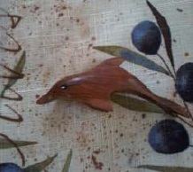
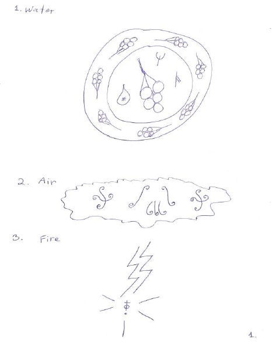
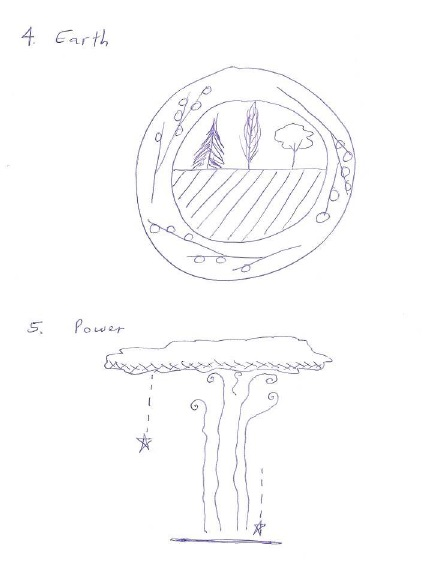

La magia nos abre a un universo y conocimientos totalmente nuevos. A dimensiones
superiores y habilidades que nos imaginábamos imposibles de lograr hasta ahora. La magia
es una práctica espiritual que nos permite expandir nuestras habilidades y comprender los
elementos, la naturaleza y el universo en un nivel mucho más profundo.
La magia no significa ‘tener poderes’ o controlar los elementos. Es el arte de tocar a la
esencia de los elementos y las fuerzas del universo para formar una unidad con ellos. Los
conocimientos aprendidos y enseñados en la magia consisten en un conocimiento esotérico
y sagrado; nos enseña cómo usar partes desconocidas de uno mismo. También ofrece la
oportunidad de conectar con nuestra energía en una manera nueva y distinta. Influenciar el
mundo exterior es una pequeña parte del propósito de la magia; lo que importa es cambiar
nuestro mundo interno.
La magia de Lanterum está centrada en la naturaleza y se encuentra en forma escrita y
simbólica. Aprender este conocimiento incluye un aspecto práctico, además de leer y
estudiar. La magia requiere práctica para lograr resultados, especialmente con la práctica
de hechizos, uso de varitas y varias pociones. Sin embargo, la magia de Lanterum no se
aprende únicamente en libros, hay mucha información que debe repasarse con frecuencia.
Hay similitudes entre la magia realizada en Lanterum y ciertos tipos de magia practicada
en tiempos antiguos, especialmente con la magia de las hierbas y creencias paganas de la
wicca. La historia de la magia en nuestro mundo data de la época prehistórica. La mayoría
de las culturas antiguas, como los celtas, los griegos y los romanos tenían algunas prácticas
mágicas relacionadas con sus ritos y ceremonias religiosas. La magia no es una novedad
en nuestro mundo.
Nuestra sociedad ahora se encuentra desencantada y llena de escepticismo, incredulidad y
está faltando una substancia espiritual. El mundo ha perdido su conexión y sensibilidad
hacia los animales, la naturaleza y la tierra misma. Espero que Lanterum pueda ayudar a
re-encantar el mundo y traer más de su magia para todos, para el beneficio de la tierra, la
naturaleza y la humanidad.
Sabine Blais
Varitas
El uso
de una varita corta es necesario en la práctica de Lanterum. La varita debería medir entre
10 y 14 pulgadas (25 - 35,5 cm) y no tener cristal en la punta.
Varitas hechas con tornos para madera
Varita, madera de MoradoVarita de Acebo, 11 pulgadas.
Varitas hechas a mano
Varita de abeto, 13 pulgadasVarita de arce, 11 pulgadas
Definiciones
Magia
un sistema de prácticas energéticas o espirituales, que sirven para producir un
efecto o cambio deseado en el mundo físico. La magia usa varias herramientas y técnicas,
como varitas y el uso de hechizos.
Hechizo
una palabra o grupo de palabras que tiene un poder mágico o transportan una
energía/influencia mágica. Actúan rápidamente y tiene un efecto temporario.
Encantamiento
un hechizo que tiene un efecto largo o permanente sobre una persona,
objeto o lugar. Los encantamientos llevan más tiempo para actuar, que un hechizo normal.
Encanto
un encanto es un encantamiento que actúa rápidamente. Los encantos actúan
sobre objetos o situaciones más pequeños – son permanentes. Se usan sobre objetos
pequeños para crear talismanes u otros objetos mágicos. A un objeto encantado a veces se
le llama ‘encanto’ también.
Amuleto
es un gráfico o un símbolo, normalmente un circulo o medallón que sirve como
un objeto mágico – se usan muchas veces con encantamientos y encantos. Un amuleto
puede ser un objeto mágico que protege a su dueño.
Talismanes
es un objeto pequeño que tiene poder mágico o transporta un significado
mágico. Es normalmente un objeto que recibió un encanto o un encantamiento (nota: una
varita no es un talismán). Los talismanes sirven para atraer ciertas energías a sus dueños.
Poción
es una mezcla o combinación de ingredientes unidos para traer un efecto o un
cambio mágico. Se puede usar un hechizo con pociones. Las pociones se beben y se
calientan con una llama abierta.
Mago
una persona que estudia o practica la magia.
Hechicero
un mago más avanzado y con más experiencia.
Brujo
un hechicero que conoce la magia negra, y tiene los conocimientos y las
herramientas para defenderse contra la magia negra.
Herramientas Magicas
Varitas
Bastones, báculos
Amuletos
Símbolos
Runas
Espadas
Cristales, piedras
Cartas mágicas
Dados mágicos
Juegos de mesa
Bola de cristal
Brújula mágica
Juego de canicas
Juego de ajedrez
Sombreros
Cinturones
Capas, mantos
Toga, sotana
Bolsitas mágicas
Inciensos, aceites, cremas
Tinta mágica (con plumas)
Talismanes
Velas mágicas
Sellos mágicos, estampas, glifos
Mosaicos mágicos
Acerca de los hechizos.
Los hechizos son una herramienta poderosa en la magia. Abren un espacio energético y
crean la manifestación en varias formas. Como los símbolos en una técnica curativa, los
hechizos afinan el trabajo energético y producen un efecto especifico.
Los hechizos sirven para la protección, la sanación, con los animales, las plantas y árboles,
para frenar energía negativa y para la transformación. Los hechizos también pueden crear
un movimiento de energía (incluso físico), y nos dan la oportunidad de trabajar con los
elementos, especialmente el fuego. El trabajo que podemos hacer con hechizos no tiene
límites.
Existen hechizos y hechizos de encantamiento. La diferencia entre los dos es el tipo de
trabajo que hacen, y la duración del efecto que dan. Un hechizo tiene un efecto temporario,
y dura poco tiempo. Actúa muy rápidamente y el efecto desaparece después de un tiempo.
Los encantamientos tienen un efecto que dura más tiempo, o que es permanente. Se usan
sobre lugares, espacios, o en objetos mágicos (talismanes, varitas, ropa). Producen un
cambio permanente.
Los hechizos de Lanterum tienen una sola palabra; los hechizos no están en un idioma
conocido.
Activar una varita
Para usar una varita y lograr hacer el trabajo de manifestación, la varita tiene que
estar activada antes de empezar. La varita se activa una sola vez, el proceso es permanente.
Activar la varita aumenta su energía y su capacidad para manifestar cambios.
Para hacer la activación de su varita, agarrar la varita en su mano dominante y decir
en voz alta o en silencio la palabra siguiente:
Neptonum
Luego de ello, su varita ya está activada y lista para usar, para el primer nivel de
Lanterum. Este proceso se hace solo con varitas cortas (25 a 35.5 cm, o 10 a 14 pulgadas).
Encantos y encantamientos
Encantar objetos con un encanto:
Tinta mágica
Mapas
Libros
Espejos
Sombreros, cinturones, bolsitas mágicas
Bola de cristal
Plumas y bolígrafos mágicos,
Aceites
Comida
Bebidas
Escobas
Capas y togas
Velas
Brújulas
Se usan encantos para encantar objetos pequeños como herramientas, ropa, etc... Se puede
también usarlos para encantar comida, bebidas u otros líquidos (tintas, aceites, pociones)
para hacerlas mágicas.
Técnicas para agarrar la varita
1 – Usar la varita con el dedo índice rodeando la varita (normal)
Uso: Estándar, uso general.
2 – Trabajar con el dedo índice sobre la varita, señalando y tocando la varita.
Uso: dirigir la energía como un láser, más enfocado.
3 – Con el dedo encima de la varita, señalando a 45 grados a partir de la varita.
Uso: aumenta la posibilidad de acción de la varita.
4 – Con el dedo índice rodeando la varita, con la muñeca y la mano torcidas, con la muñeca
hacia arriba.
Uso: autodefensa y protección.
5 – Con el pulgar saliendo de costado, perpendicular a la varita.
Uso: prolongar la duración de un hechizo.
6 – Con las yemas de los dedos índice y el pulgar tocando la varita, como pinchar.
Uso: retener la energía.
7 – Con el pulgar hacia abajo.
Uso: para plantar o liberar un exceso de energía.
Movimientos con la varita en la magia
Señalar: para dirigir la energía como un láser, aumenta la concentración de la energía
Golpecito en el aire: el movimiento se hace una sola vez – descarga una gran cantidad
de energía de una vez.
Decir ‘adiós’ con la varita: desacelera la energía, manifiesta o crea un cambio
lentamente.
Bajar en picado: acelera la energía, se hace para realizar cambios rápidos.
Círculos: hacer círculos repetitivos con la varita:
En sentido anti horario:
Manifestación, trabajar con fuego
Efecto de bloqueo (auto-defensa)
Escudar, protección - suspensión - frenar
En sentido horario:
Levitación - hechizos de sanación
Conectar con los elementos (tierra, aire, y agua)
Trabajar con las plantas y árboles
Encantamientos (usar el brazo entero)
Invisibilidad - Transmutación
Comunicar con los reinos elementales
Golpear a repetición en el aire: movimiento repetitivo abajo-arriba con la muñeca, sirve
como un mando o una señal.
El Corte vertical: movimiento largo hacia abajo con el brazo entero. Separa la energía
en dos partes frente de Ud., para crear una apertura (ejemplo: abrir un espacio energético).
Bordear: dibujar un cuadro o un círculo en el aire, sirve para crear un portal de energía
o una ventana.
Golpear un objeto: se hace tres o cuatro veces, golpear un objeto ligeramente con la
varita, para activar un cambio.
¿Qué es una poción?
Una poción es una solución física; siempre se compone de un líquido (o más) y algunos
ingredientes sólidos. Muchas veces, requiere el uso de un hechizo para activarla.
La combinación de los ingredientes y el orden en que se agregan crea una cierta energía, y
produce un efecto mágico.
La mayoría de las pociones son con calor, y deben ser hervidas con fuego (una llama
abierta).
Todas las pociones de Emergentus son veganas; los ingredientes usados en las pociones
son a base de plantas o minerales. No contienen ningún producto animal, tampoco insectos,
etc.
El líquido usado es generalmente agua, o a base de agua. A veces se agregan aceites
vegetales. Todas las pociones se beben.
Ingredientes a base de agua (líquidos):
Elíxires de cristales
Decocciones de plantas
Jugos de frutas, vegetales
Mezclas de aceites con agua
Otros líquidos:
Vinagre
Extractos de plantas
Aceites
Melaza
Aceites esenciales
Nota: No se pone ningún alcohol en las pociones.
Ingredientes minerales en las pociones:
Cristales, piedras
Arcilla
Carbón activado
Bicarbonato
Sal
Las pociones básicas son siempre frías – se pueden usar solas, o sirven de base para otras
recetas de pociones calientes, más elaboradas.
Las pociones se guardan por un máximo de 2 días. Ponerlas en un frasco de vidrio, a
temperatura ambiente. No poner una poción usada en el refrigerador ni calentarla. El
volumen estándar de una receta de pociones es de 500 ml de líquido, un poco más de dos
tazas.
Se debe calentar las pociones sobre una llama abierta. No usar una cocina eléctrica o
microondas.
Herramientas básicas para hacer pociones:
Cacerola o caldera redonda
Fuego abierto (un conjunto de fondue funciona bien dentro de una casa)
Mortero y pilón
Balanza de cocina
Cuchara – puede ser de metal o madera
Colador y tela de queso
Taza de medir (vidrio es mejor)
Cucharas de medir
Boles chiquitos o ramekin (vidrio o cerámico)
La Relación elemental de las pociones básicas
Pociones de fuego: Sirven para sanar enfermedades, transformación, manifestación, magia
alta, energía, elementales de fuego.
Pociones de agua:Sirven para sueños, emociones, relaciones, amor, compasión, intuición,
elementales de agua.
Pociones de tierra:Sirven para plantarse, la prosperidad, abundancia, fertilidad, conexión
a la naturaleza, arboles, plantas, animales, elementales de tierra.
Pociones de aire:Sirven para volar, viajes astrales, telekinesia, sueños, facultades
mentales e intelectuales, ideas, concentración, elementales de aire.
No todas las pociones siguen esta regla.
Pociones
Ingredientes comunes en las pociones:
Hierbas y especias
Hojas, ramas o corteza de árboles
Flores
Raíces (ej.: jengibre)
Pasto, hierbas
Algunos vegetales (con semillas, cascaras, tallo)
Frutas y bayas
Sal
Piedras, cristales o arena
Aceites vegetales
Champiñones
Nueces (con cascaras)
(*No se pone ningún alcohol, miel ni gelatina en las pociones)
Una poción puede ser caliente o fría. Un caldero redondo es preferible, pero no
necesario. Algunas pociones se hacen con los ciclos de la luna, durante semanas y meses.
Las pociones pueden contrarrestar o servir de antídoto a varios venenos y toxinas. Pueden
actuar como remedios potentes frente a enfermedades y pueden modificar las habilidades
del cuerpo humano (ejemplo: aumentar la fuerza). Las pociones tienen el mismo efecto que
la sanación energética, sirven para sanar y purificar.
Las pociones de Emergentus y sus ingredientes son seguras para beber. No
contienen ninguna planta o ingrediente tóxicos; los ingredientes son comestibles y son
comidas y especias que se encuentran en su cocina o el supermercado. Sin embargo, las
pociones no son para niños: solo los adultos deberían beberlas. También, hay que tener
cuidado de alergias alimenticias antes de confeccionar una poción para los demás; verificar
la lista de ingredientes para determinar si una persona tiene alergias a algo.
Recuérdese que las plantas contienen drogas. Las plantas tienen defensas naturales
(ejemplo: espinas, un olor fuerte) y tienen un efecto poderoso (o efecto secundario) sobre
el cuerpo humano. Porque las pociones se beben, la energía y el poder sanador de la
combinación de plantas son muy potentes y tienen un gran efecto sobre el cuerpo y la
mente. Cada planta tiene su propia vibración de energía y propiedad mágica. Las pociones
trabajan en sincronía con cada planta para liberar su poder curativo en la poción.
El proceso de fabricar una poción
El primer paso para hacer una poción es leer la receta y asegurarse de que tienen
todos los ingredientes. Escribir una lista de lo que falta y luego hacer las compras en el
supermercado o dietética. Asegurarse de que todos los ingredientes están listos; los líquidos
preparados como las decocciones, mezclas de agua y aceite y elíxires de cristales deberían
estar preparados antes (ver instrucciones).
Si Ud. no tiene una cocina, hornalla o calentador a leña o a gas, un conjunto de
fondue sirve y es una manera segura de confeccionar una poción adentro de una casa,
usando una llama abierta. Si usan un conjunto de fondue con una cacerola, asegurarse que
esta sobre una superficie sólida, incombustible. Otra opción para hacer pociones en el
interior es una chimenea, siempre y cuando su olla está bien asegurada sobre el fuego de
leña. Las pociones se pueden hacer al aire libre sobre una fogata, un fogón al aire libre u
otro equipo de camping a tal efecto.
Cuando no esté indicado, tienen que prender el fuego antes de empezar , y agregar
los ingredientes en el orden marcado en la receta. Esperar algunos segundos ingrediente e
ingrediente. Las pociones se hacen lentamente para permitir a la energía integrarse.
Recuérdese que algunas veces el líquido no se pone al principio; podrían empezar con
ingredientes sólidos, y agregar el líquido cuando esté indicado en la receta.
La combinación de los ingredientes y su orden, en la receta, son muy importantes
cuando hacemos pociones. Cuando no esté indicado, dejar calentar durante 15 – 20 minutos
(fuego bajito), para una poción caliente. Pueden mezclar las pociones pero no demasiado;
la mayoría de las pociones se filtran cuando están terminadas para remover los ingredientes
solidos (solo queda el líquido). Algunos ingredientes sólidos de las pociones terminadas se
comen (ejemplo: frutas).
En algunas pociones, se debe prender el fuego después de que los ingredientes están
agregados. Muchas pociones requieren el uso de un hechizo específico. Un hechizo activa
la poción y aumenta su capacidad curativa o mágica. Hay que tener en cuenta los ciclos de
la luna, habría que conseguir un calendario.
Líquidos preparados:
Decocciones de plantas:una decocción se hace hirviendo uno o más ingredientes en el
agua (1 L), luego dejar enfriar la mezcla y dejar en infusión. Filtrar la decocción antes de
usar. Una decocción es distinta de una infusión.
Elixires de cristales:es agua energizada por un cristal, que dejamos en un volumen de
agua por un tiempo determinado. Los elixires de cristales se hacen con 1 L de agua en una
botella de vidrio, siempre se hacen bajo la luna llena. Con la excepción del cuarzo claro,
no sumergir cristales directamente en el agua, en caso que liberen metales tóxicos. En su
lugar, poner el cristal en un bol de vidrio transparente encima o al lado de la botella de agua
y dejarlo durante la noche, hasta 12 horas. El agua va a absorber la energía del cristal.
Mezclas de aceite y agua:son una mezcla de un aceite vegetal con agua. Estas mezclas se
preparan antes y se agregan en la poción cuando esté indicado en la receta.
Beber una poción
Hacer una poción es un proceso poderoso y antiguo. A medida que la energía de la
poción crece y se desarrolla durante su preparación, la poción adquiere una vibración
elevada y se energiza fuertemente. La energía de la poción le da un cierto carácter y una
consciencia, casi como una forma de inteligencia. Nótese que hacer pociones no es
gastronomía. Los ingredientes no se combinan por sabor o gusto. Estas mezclas tienen un
propósito mágico y energético, y a veces no tienen un olor o sabor ricos. Nótense el color
y la textura de una poción terminada, y la energía que irradia.
Una poción se bebe de a sorbitos, lentamente. Beber no más de ½ taza de la poción
a la vez. Repetir cada 30 minutos si necesario. No exceder 3 dosis.
Recordatorio:
Los líquidos preparados como las decocciones y elíxires de cristales deben ser preparados
anteriormente. Los elíxires de cristales siempre se hacen bajo la luna llena – no sumergir
los cristales en agua o líquidos.
Si usan hierbas en capsulas, abren las capsulas y usan las hierbas solamente. Tiran las
capsulas de gelatina vacías.
Los niños y embarazadas no deberían beber pociones, a menos que está indicado que
pueden beberlas.
Consejos para fabricar pociones:
Seguir las recetas como están escritas; nunca se cambia una receta, tampoco añadir o
remover un ingrediente de una receta.
Seguir el orden de adicción de los ingredientes en una receta de poción. No cambiar el
orden de los ingredientes.
No se tapa una poción hirviendo. Sin embargo, se puede tapar parcialmente una decocción.
Si se produce una gran pérdida de líquido por evaporación, agregar una o dos cucharadas
de agua, nada más.
Magia Lanterum
Introducción
Este manual es para los alumnos nuevos de Lanterum, es magia para el público, abierto
para todos. Es una combinación de conocimientos y técnicas energéticas que nos da la
oportunidad de crecer espiritualmente, y producir un efecto o cambio curativo en el mundo
físico. El propósito de Lanterum es positivo y tiene que ver con la sanación y la protección.
Lanterum tiene su origen en Andrómeda, y es canalizado desde la misma fuente de donde
proviene Aqualead. La energía de Lanterum es suave, pura y segura; es un tipo de magia
fácil a aprender para los principiantes y los que no tienen ninguna experiencia previa en
técnicas energéticas. No hay prerrequisitos para aprender la magia de Lanterum.
Lanterum se practica como arte mágico. Incluye el uso de hechizos, varitas, runas,
símbolos, amuletos, recetas de pociones u otras prácticas de magia. Lanterum se enfoca
sobre los elementos de la naturaleza, e imprime una fuerte energía de Andrómeda. El uso
de una varita corta es necesario en la práctica de Lanterum. La varita debería medir entre
10 y 14 pulgadas (25 - 35,5 cm) y no tener cristal en la punta.
Acerca de Lanterum
Hay dos niveles de Lanterum. En este primer nivel de magia Lanterum, uno esta
introducido a conceptos básicos de la magia, y una variedad de herramientas como runas,
dados, y banderas. También, el primer nivel introduce los principiantes a elementos básico
de la magia de las hadas. Los alumnos aprenden a activar sus varitas con un encanto, que
es permanente, y al hacerlo, la persona queda iniciada en este nivel de magia. Se debe
activar la varita para poder practicar la magia y hechizos en la magia Lanterum.
Este sistema no es una religión y no se hacen cultos a dioses o divinidades. La magia de
Andrómeda viene con su propia energía y sabiduría.
Activar una varita
Para usar una varita y lograr hacer el trabajo de manifestación, la varita tiene que
estaractivadaantes de empezar. La varita se activa una sola vez, el proceso es permanente.
Activar la varita aumenta su energía y su capacidad para manifestar cambios.
Para hacer la activación de su varita, agarrar la varita en su mano dominante y decir
en voz alta o en silencio la palabra siguiente:
Neptonum
Luego de ello, su varita ya está activada y lista para usar, para el primer nivel de
Lanterum. Este proceso se hace solo con varitas cortas (25 a 35.5 cm, o 10 a 14 pulgadas).
Hechizos
Los hechizos marcados con un asterisco (*) requieren el uso de la varita.
Animales
Wolferino – Hechizo para proteger animales y todos tipos de fauna; puede funcionar a
distancia.
Equitenum –Hechizo para la sanación general de los animales, ayuda con heridas físicas.
Aumenta la telepatía y la comunicación con los animales.
Medio ambiente
Tempesto* -Hechizo para limpiar el aire de contaminantes. También contrarresta la
polución electromagnética de los celulares y computadoras.
Aguello –Hechizo para purificar neblina, niebla y smog. Puede actuar sobre nubes en
baja altura.
Tolianto* -Hechizo para acelerar la biodegradación y la descomposición de desechos
físicos y orgánicos, en la tierra y en el agua.
Sanacion/Primeros auxilios
Humena –Hechizo de sanación general – actúa en el nivel físico.
Eterna –Hechizo para aliviar el dolor; para cualquier forma de dolor físico.
Racantor –Hechizo para contrarrestar todos tipos de infecciones.
Etorsto –Hechizo para acelerar la recuperación de heridas físicas, fracturas, cirugías u
otro trauma físico.
Salud mental
Cedrero –Hechizo para aliviar y sanar todos tipos de depresión relacionada con la
soledad, el duelo, adicciones o enfermedad mental.
Palomina –Hechizo para aliviar la ansiedad y el pánico. Tiene un efecto tranquilizante y
reconfortante. Bueno para problemas de sueño.
Energía negativa
Rafala –Hechizo para bloquear y escudar a uno mismo de la energía negativa de los
demás.
Afaeria* -Hechizo para remover energías negativas de lugares, objetos y personas e
instituciones. Puede funcionar a distancia.
Otros
Naraykar* -Hechizo de purificación para aclarar la mente, el aura y el campo energético.
Eleva rápidamente la consciencia, y la vibración energética en un cuadro.
Fumanda* -Hechizo para intensificar la magia cuando uno trabaja con el humo; aumenta
la energía. Funciona bien con el incienso o en la presencia de una fogata.
Plantas y arboles
Acornus –Hechizo para los árboles; los sana y protege, apoya la comunicación y un
mejor entendimiento de los árboles. Promueve el crecimiento.
Floratum* -Hechizo para todos tipos de plantas - apoya el crecimiento, la salud y
promueve la germinación y brotes de las semillas. Excelente para la jardinería.
Autodefensa/Protección
Volcanus –Hechizo de autodefensa para bloquear ataques físicos de un asaltante. Repele
el asalatante.
Brezix –Hechizo de autodefensa para bloquear ataques verbales y repeler un asaltante.
Remordil –Hechizo de protección, general – sirve para la casa, el hogar, pertenencias
personales y para proteger los demás. Excelente para el viaje.
Riqueza/Prosperidad
Ollegus –Hechizo para traer éxito en el negocio, ingresos, empleo y salario. Aumenta
los ingresos.
Froxus –Hechizo para traer la prosperidad en general – trae dinero, éxito y buena fortuna
para los que lo necesitan.
Eruptil –Hechizo para la abundancia en general – en la forma de comida, refugio,
vivienda básica y proveer para sus necesidades básicas.
Runas
Las runas son una herramienta mágica y de adivinación en Lanterum. Hay 12 runas en
este juego. Cada runa tiene su propio símbolo y nombre, que corresponde con una
vibración de energía particular. Se puede tirar una sola runa, o tirar más para una lectura
más completa. También, las runas se arreglan en una tirada. Se puede hacer una
pregunta antes de tirar una runa para obtener más respuestas en la interpretación.
También, se puede usar las runas como herramienta de manifestación: eliges una runa
que representa lo que quieres sanar, y pones tu intención y medites sobre esta runa.
Los símbolos rúnicos en la magia Lanterum son Andromedanos en origen.
Significado de las runas:
Asta – Uno mismo; el enfoco es el conocimiento de uno mismo, su individualidad,
personalidad, y verdadera identidad. Esta runa te anima a conocerte, y reconocer tu
poder y limites personales.
Bero – Casa; esta runa enfoca en donde vives, tu hogar, lugar de nacimiento u origen.
También está relacionada con donde perteneces, tu familia y raíces ancestrales. Puede
relacionar con tu casa física, propiedad o inmueble.
Anuk – Posesiones; prosperidad y acumular fortuna material. Esta runa trae más
equilibrio en su vida material y sus posesiones personales. Recuérdate que la riqueza
material trae prosperidad, pero también puede resultar en una carga. Puede señalar una
necesidad de más organización o reducir su desorden.
Stera – Protección; esta runa trae la seguridad y señala la necesidad de rodearte con
protección. Podrías necesitar proteger los demás que son más vulnerables alrededor.
Preste atención en su espacio físico, personal y energético. Cuando enfocas sobre esta
runa, atraes más energía protectora en su casa y familia.
Hospi – El Sol; el enfoco de esta runa es la alegría, felicidad y energía positiva
irradiando en cada dirección. La runa universal Hospi irradia un calor, alegría y una
energía reconfortante para todos. Enfoca en este runa para recibir más energía y un
punto de vista más alegre sobre la vida.
Fero – Amor; esta runa enfoca en el amor expresado en todas sus formas. Puede ser en
una relación, una romance apasionada, o el amor maternal para un niño. También trae la
compasión, el perdón y la reconciliación. Esta runa es un sanador poderoso.
Narin – El Mundo; esta runa enfoca en el mundo externo; trae la comunicación,
interconexión, una vida social ocupada e intercambiar ideas con grupos de personas o una
multitud. Si tienes un mensaje a difundir, el mundo te escuchara con la apariencia de esta
runa.
Telo – Prosperidad; esta runa señala la prosperidad y la buena fortuna y atrae la
abundancia en forma de dinero, comida o un aumento de ingresos. Espera un aumento de
salario, éxito en el negocio o un regreso de dinero inesperado como un reembolso o una
prima.
Ono – Energía; su energía ya está alta en este momento, o puede aumentar más. Preste
atención a mensajes que puede aparecer, porque su intuición está más afinada en este
momento. Tienes la habilidad de canalizar una gran cantidad de energía en varias
formas, como trabajo de sanación, manifestación o varias formas de magia.
Anek – La Tierra; esta runa anima el enraizamiento y la conexión con la tierra.
Necesitas salir a caminar o ir afuera y sentir la tierra bajo sus pies. La runa indica
también una necesidad de conectarte con los elementos de la naturaleza, las plantas y la
jardinería.
Akur – Arboles; necesitas pasar más tiempo en el bosque. Puedes necesitar conectar
con la propiedad mágica de un árbol en particular, o prestar atención a un cierto tipo de
madera para fabricar una varita. Conecta con los elementos y preste atención en la
presencia de hadas en las hojas de plantas cerca. La naturaleza te está llamando.
Amistad; esta runa anuncia nuevas amistades, una nueva conexión o nuevo
colegas y colaboradores. Esta runa te anima a abrirte y encontrar nueva gente. Espere
encontrar nuevos conocidos a través de situaciones inesperadas, y seguramente serán
asociaciones positivas y gratificantes.
Glifos
Hay ocho (8) glifos en la magia Lanterum. Los glifos actúan como ‘pequeños
símbolos’ y son una mezcla entre un símbolo y una letra mágica. Todos los símbolos
parecen como la letra Z en mayúscula. Tienen varios propósitos. Como son caracteres,
se puede dibujar, grabar o pintarlos en lugares, sobre objetos, herramientas mágicas o
sobre un pedazo de papel.
Los glifos se usan solos y se proyectan en cualquier lugar en el mundo, con
pensamiento e intención. No es necesario usar una varita para usar los glifos, sin
embargo, el uso de la varita es opcional. Estos símbolos sirven para la purificación, la
limpieza y la eliminación del exceso y para remover el desorden. Reducen y simplifican
la energía de cualquier cosa o situación en su forma más simple y beneficiosa. Se puede
aplicar físicamente, sobre el cuerpo humano, para limpiar una casa o un espacio, al nivel
ambiental o emocionalmente. Cada glifo remueve un exceso de energía o cosas en un
nivel particular.
Los significados y usos de los ocho (8) glifos:
La letra Z con la flecha hacia arriba. El primer glifo enfoca sobre la energía, la
protección y disipa cualquier forma de violencia. Se puede usar el símbolo a distancia;
excelente para escudar uno mismo contra energías negativas o agresivas.
La letra Z con la flecha hacia abajo. El segundo glifo se aplica sobre el mundo físico,
para producir cambios positivos.
La letra Z con la flecha de costado. El tercer glifo es emocional y sirve para remover
bloqueos y desorden emocional de una persona o relación.
La letra Z con dos puntos. El cuarto glifo sirve para limpiar los espacios físicos, como
un lugar o una casa.
La letra Z con un punto encima. El quinto glifo se usa sobre el cuerpo humano para
sanar y eliminar toxinas o bloqueos.
La letra Z con la línea vertical a través y un punto. El sexto glifo trabaja al nivel
mental para aclarar la mente de creencias limitantes, pensamientos e ideas negativos.
La letra Z con dos puntos en cada lado y dos líneas verticales. El séptimo glifo sirve al
nivel ambiental para lugares muy contaminados en la tierra, el aire o en el agua.
La letra Z con una línea vertical y dos puntos. El octavo glifo sirve para liberar energía
atrapada de cualquier tipo de situación. Ideal para remover energía atascada y traer la
libertad del movimiento.
Dado mágico
Hay seis símbolos en el dado; cada símbolo tiene un valor numérico de 1 a 6. Los
símbolos son parecidos a letras mayúsculas del alfabeto conocido. Este dado es mágico y
sirve para propósitos energéticos y la adivinación; también, sirve como un dado común
para juegos de mesa, etc. Cada símbolo en el dado tiene un significado y una vibración
energética particular.
C – Salud, tiene un valor numérico de 1. Pertenece a la sanación, la salud en general y
muestra cualquier problema con su condición física en este momento. También se
relaciona con una práctica o carrera en la medicina, la salud, la sanación holística, el
chamanismo y la medicina naturópata o natural.
A – Espiritualidad, tiene un valor numérico de 2. Este símbolo revela su camino
espiritual y cualquier actividad relacionada con una práctica espiritual, trabajar con
energía y su conexión con el espíritu.
X – Emociones, tiene un valor numérico de 3. Este símbolo esta relacionado con su
estado emocional y cualquiera situación alrededor de Ud. que tiene un impacto
emocional.
U – Trabajo y negocio, tiene un valor numérico de 4. Este símbolo indica su negocio,
lugar de trabajo, su situación de empleo y estado financiero. El símbolo trae prosperidad
y éxito en el negocio.
O – Relaciones, tiene un valor numérico de 5. Este símbolo revela cualquier tipo de
relación, o una asociación particular con alguien. Puede involucrar dos personas, un
grupo o una comunidad.
E – Hogar, tiene un valor numérico de 6. Este símbolo está relacionado con el hogar,
la casa, donde vives y de dónde vienes. También puede relacionar con riqueza personal,
abundancia, y ser dueño de una propiedad. Puedes comprar, vender, alquilar o construir
un hogar; puede indicar también una mudanza.
Se puede usar el dado solo; se puede también usar dos o tres dados para la adivinación.
Los símbolos se interpretan, o se usan para el trabajo energético y propósitos mágicos.
Si usas el dado con un juego de mesa, generalmente se usan dos dados. Este dado sirve
para cualquier otro juego de mesa; agrega más energía y significación al juego. Cada
símbolo tiene un valor numérico de 1 a 6.
El valor numérico con dos o tres dados se obtiene de manera distinta del dado común.
Funciona así:
El valor numérico usando dos dados:
Si los valores de los dados son distintos, sustraer el valor menor del valor más grande.
Ejemplo: tiras dos dados y obtienes los símbolos U y C. Significa 4 – 1, el valor obtenido
es 3.
Si los valores en los dados son iguales, se suman los valores.
Ejemplo: tiras los dados y obtienes los dos símbolos A. Significa 2 + 2, el valor obtenido
es 4.
El valor numérico usando tres dados:
Cuando tiras tres dados, sumas los dos valores más grandes, y sustraes el valor más
menor de la suma.
Ejemplo: tiras tres dados y obtienes el símbolo A, U y E. Significa que el U y el E tienen
valores más grandes, los sumamos. 4 + 6 = 10. El A vale 2, sustraemos 10 – 2, el valor
obtenido es el 8.
Si dos dados son iguales, sumamos los valores, y sustraemos el valor más menor del otro.
En algunos casos, es posible que la suma y el otro valor son iguales; entonces es posible
de obtener el valor numérico (0). En un juego de mesa, es equivalente de perder tu turno.
Ejemplo: tiras los dedos y obtienes dos símbolos O y el A. Significa que sumas los dos
O, 5 + 5 = 10. El A vale 2, sustraer 10 – 2, el valor obtenido es el 8.
Ejemplo: tiras los dados y obtienes dos símbolos A y el U. Significa que sumas los A, 2
+ 2 = 4. El U vale 4, sustraes 4 – 4, el valor obtenido es 0.
Si los tres dados son iguales, suman todos los valores.
El dado Lanterum – Los seis símbolos de los dados
Banderas mágicas
Las banderas mágicas son una manera interesante de difundir energía, sobre una larga
distancia, en forma masiva. Las banderas se colocan afuera y envían energía libremente, a la
vista de todos. Hay una fuerte relación entre banderas y el elemento del aire. En la tradición
tibetana, las banderas de oración se colocan afuera y el viento transporta las bendiciones que
contienen. El concepto de usar banderas para enviar energía o mensajes es muy antiguo.
Las banderas sirven para marcar un territorio, para señalar o declarar una identidad
personal, heráldica o nacional. En la magia, las banderas sirven para difundir energía de un cierto
símbolo a distancia durante un tiempo, o de manera permanente. Si quieren dejar sus banderas
afuera de manera permanente, usa un material resistente al agua. Las banderas deberían ser
bastante grandes para que se vean y pueden ser de cualquier color de su elección. Estas tres
banderas de Lanterum se usan solas, no son un ‘juego’ de banderas que deben ser atadas a una u
otra. Se puede usar una bandera sola; para usar estas banderas uno debe haber realizado la
primera activación de varita de Lanterum. Se puede atar las banderas a un árbol, un poste, etc…
con una cuerda. Las banderas son perfectas para colocar sobre un porche o una veranda, así
quedan secas todo el año.
Los símbolos dibujados o pintados deben ser exactos y nunca se debería alterar o
modificarlos.
La primera bandera – Conectar con la naturaleza, la tierra y los animales
Esta bandera sirve para promover y apoyar una relación sana con la naturaleza y el reino vegetal.
El símbolo parece como un conjunto de espirales celtas y tiene un trébol encima, invocando el
color verde. Apoya cualquier forma de conexión con el mundo natural, también la abundancia, la
paz y la fertilidad de la naturaleza. El símbolo anima uno a hacer más jardinería, plantar más
árboles y hacer las zonas urbanas más verdes. El símbolo aumenta la comunicación con todos los
animales y aumenta nuestra sensibilidad hacia ellos.
La segunda bandera – Protección
Esta bandera es fuertemente protectora y su energía sirve para repeler cualquier forma de actos
hostiles, intrusivos o violentos. Repele energía negativa y malas intenciones; mantiene el espacio
de manera poderosa, en donde se coloca. Trae una sensación de seguridad y de paz interior.
La tercera bandera – Paz
Este símbolo tiene un efecto suavizante y tranquilizante y sirve para disipar la
agresividad y la violencia. Irradia un calor reconfortante y también tiene un efecto
sanador en momentos de pena o adversidad. Una bandera muy buena para problemas
emocionales, un conflicto muy grande, duelo o momentos duros y difíciles. También, es
muy bueno para colocar en tiempos de turbulencia, agitación política/social o una guerra.
Recetas de incienso
Incienso
Los inciensos se queman sobre un pedazo de carbón. Se pueden dejar quemar durante un
tiempo, luego añadir más incienso si es necesario. Se pueden usar hechizos mientras se
queman las hierbas.
Incienso Lanterum no.1
Incienso de Cedro y jazmín: suave, reconfortante y tranquilizante. Ayuda con la
meditación.
2 partes incienso (olíbano)
2 partes Cedro (thuja)
1 parte hojas de laurel
2 partes Menta
1 pellizco de ají (muy poco!)
Algunas gotas de aceite de jazmín
Machucar los ingredientes juntos y quemar sobre un carbón cuando practican magia, o en
cualquier momento.
Incienso Lanterum no.2
Incienso de Rosa y roble: terroso, alentador y reconfortante. Apoya el enraizamiento.
1 parte sangre de dragón (resina)
3 partes de enebro
2 partes de hojas de roble secadas
2 partes de salvia blanca
1 parte de bayas de enebro
1 parte de canela
Algunas gotas de aceite esencial de rosa
Machucar los ingredientes juntos y quemar sobre un carbón cuando practican magia, o en
cualquier momento.
Incienso Lanterum no.3
Incienso de romero y mirra: spiritual y esclarecedor – apoya el trabajo energético con
vibraciones muy altas.
1 parte Mirra
2 partes Cedro (thuja)
1 parte Romero
1 parte bayas de enebro
Machucar los ingredientes juntos y quemar sobre un carbón cuando practican magia, o en
cualquier momento.
Hierba de pipa
La hierba de pipa siempre se fuma con una pipa; son mezclas de hierbas y especias. Nunca
inhalar el humo, llevar el humo a la boca y liberarlo. Las mezclas de hierbas de pipa no
contienen ningún tabaco o ‘drogas’, y son seguras para fumar.
Pueden comprar cualquiera forma de pipa, las convencionales o las más largas, estilo
‘capillero’. Pueden fumar las hierbas en cualquier momento.
Fumar la pipa es una forma meditativa de mantener el espacio. Fumar tiene un efecto
poderoso en la magia, porque nos conecta físicamente con el elemento fuego.
Hierba de pipa Lanterum no.1
Hierba de pipa de lavanda y citronela: dulce, liviano e inspirador.
3 partes Lavanda
3 partes Enebro
2 partes Citronela
1 parte Nuez moscada
1 parte Tomillo
2 partes hojas de laurel
Machucar los ingredientes juntos, y fumar con una pipa. No inhalar el humo.
Hierba de pipa Lanterum no.2
Hierba de pipa con Clavo de olor y menta: fuerte, picante y energizante.
2 partes Trébol
2 partes Cedro (thuja)
Algunos Clavos de olor
1 parte Romero
1 parte escaramujos secados (opcional)
2 partes Menta
Machucar los ingredientes juntos, y fumar con una pipa. No inhalar el humo.
Infusiones y tés
Las infusiones se hacen como un té normal. Poner una pequeña cantidad de la mezcla de
hierbas en la tetera y añadir agua hervida. Dejar en infusión 5 – 10 minutos, y filtrar el té
antes de servir y beber.
Las infusiones de las hadas tienen una intención mágica y debe tomarse con intención y
consciencia. Estas infusiones son excelentes para beber durante una meditación, una
práctica mágica o un hechizo; también es bueno tomar el té cuando usamos una herramienta
de adivinación, como los dados o las cartas.
El olor del té, y el aroma del vapor llevan las propiedades del té y es un bueno vehículo
para la manifestación.
Infusión energizante
2 partes majuelo
1 parte tomillo
2 partes menta
1 parte hojas de frambuesa o zarzamora
1 parte semillas de cilantro
Infusión para el éxito
1 parte regaliz
1 parte Estrella de anís
2 partes melisa
1 parte romero
Infusión para romper patrones y habitudes
2 partes trébol
1 parte jengibre
1 parte cascara de naranja
1 parte clavos de olor
1 parte romero
Pociones
Poción para el equilibro
1 pellizco lavanda
1 pellizco salvia
10 granos de pimienta
2 pellizcos menta
500 ml de Agua
1 puñado de cascara de limón (fresco)
1 cucharadita de semillas de comino
5 rebanadas de manzana, fresca
Poción del Principiante (Caliente):
1 pellizco de hojas de menta (fresca o seca)
500 ml de agua
1 pellizco de manzanilla
1 pellizco de lavanda
1 pedazo pequeño de vainilla (frijol)
Da dos tazas; se puede duplicar la receta. Filtrar antes de beber.
Poción para sanar problemas de piel
5 hojas de diente de león
½ limón, cortado en rebanadas
2g de bayas de sauco
1 cucharada de jugo de aloes
500 ml de agua
1g de Echinacea
1 cucharadita de semillas de anís
1 cucharadita de arcilla en polvo
3 ramitas de tomillo
2 dientes de ajo, machucados
La Meditación
Una meditación básica está incluida en Lanterum.
Meditación básica:
Siéntese en el piso o en una silla. Cierre sus ojos y concéntrese en su respiración. Respire más
profundamente (por la nariz), sin esfuerzo.
Ponga sus manos sobre sus piernas, con las palmas hacia arriba o abajo. Medite durante 5 – 10
minutos, y aumente la duración gradualmente. Mantenga la columna recta.
Se recomienda meditar a lo largo de su práctica de la magia.
Meditación con la varita:
Puede realizar la misma meditación, con la varita en su mano dominante. Enfóquese en la energía
de la varita, y en la conexión entre usted y su varita. El objetivo de este ejercicio es establecer una
relación con su varita, en su práctica de la magia.
Yoga y estiramientos:
El yoga es una excelente manera de plantarse y hacer circular la energía durante la práctica de la
magia. Algunas posturas de yoga y estiramientos con la respiración larga y tranquila, ayudan para
calmar la mente, y fortalecer los canales de energía. Medite en las posturas, respirando largo y
profundo, mientras mantiene el cuerpo relajado.
Magia de las hadas
Introducción
La magia de las hadas es más liviana y suave que otros tipos de magia. Este tipo de
magia enfoca sobre los encantamientos y la protección de los bosques. Las hadas son seres
elementales y están relacionados con el elemento del aire; pueden flotar y volar en el aire. Las
hadas traen una liviandad física y espiritual a cualquier situación, porque su magia crea un
sentido de inocencia y pureza donde esta invocada.
La magia de las hadas se practica con varitas y tiene una fuerte conexión con las plantas, las
flores y los ciclos de la luna.
Algunos cristales que corresponden con las hadas: ágata arborescente, ámbar, piedra de luna.
Hechizos por categoría
Los hechizos marcados con un asterisco (*) requieren el uso de la varita.
Animales
Beranta –Hechizo para proteger y apoyar los insectos, especialmente las abejas.
Folianta –Hechizo para proteger y apoyar los pájaros y animales pequeños.
Encantos
Afranza –Encanto para encantar y empoderar objetos pequeños – no sirve para activar varitas.
Manifestación
Entrafno –Hechizo para facilitar la comunicación y la conexión con las hadas. Apoya la
conexión con el mundo de las hadas.
Plantas/Arboles
Vertera –Hechizo para apoyar los espacios verdes y la reforestación. Ideal para las zonas
urbanas.
Sapielenum* -Hechizo para apoyar la polinización de las plantas – bueno para las flores y
arboles con flores.
Agua
Mallonta –Hechizo para atraer y manifestar agua limpia y potable.
Meditación con el Hombre Verde
Conectar con las hadas de la Tierra
El‘Hombre Verde’es también conocido comoack-in-the-Greeny es una figura antigua que
representa el crecimiento y el renacimiento de la naturaleza en la primavera. Es prominente en
Europa y Gran Bretaña antiguas. Representa la fertilidad y la abundancia de la naturaleza y se
celebra en el 1er de mayo (día de mayo); varias veces aparece como un hombre con una barba
con hojas en sus pelos, con hojas brotando desde su boca, nariz o orejas. La cara del Hombre
Verde aparece en muchas múralas, iglesias y catedrales en Europa.
Esta meditación sirve para conectar con este ser poderoso de la naturaleza y aprovechar la
abundancia y la prosperidad de la naturaleza. Acá son los pasos para hacer la meditación:
Practica esta meditación cerca de un árbol si es posible; puedes también agarrar su varita en su
mano dominante durante la meditación, como una opción.
Siéntate tranquilo(a) con los ojos cerrados y visualice hojas verdes en el sol, el follaje verde de
las plantas y el color verde. Luego visualice la cara del Hombre Verde. Permite que aparece en
su mente, y preste atención a cualquier detalle cerca de su cara, barba, tono de verde, follaje en
su cara, etc.. Invita a la energía del Hombre Vede a rodearte. Preste atención en cualquier
mensaje, pensamientos o cualquier visión que puedes recibir en su presencia.
Termine la meditación agradeciendo al Hombre Verde y los elementales del bosque, y abre sus
ojos.
Opción: si no estás meditando.
Se puede también conectar con la energía del Hombre Verde sin meditar. Este ejercicio de
conciencia se hace en cualquier momento, cunado estas afuera en el jardín o cruzando un parque
entre los árboles.
Cuando estas afuera en la naturaleza, preste atención a la presencia del Hombre Verde en los
árboles, hojas, follaje, musco y rocas. Busca las ‘caras de hadas’ escondidas en el bosque que
puede aparecer y ser visibles, si presten atención. Sea receptivo a estas presencias elementales; el
Hombre Verde podría aparecer y hacerse reconocer entre ellos. Permite que su intuición e
imaginación funcionan libremente. ¿Que veas en este momento? Presta atención en cualquier
mensaje y pensamiento que viene en la mente durante este tiempo.
Incienso de las hadas:
Los inciensos se queman sobre un pedazo de carbón. Se pueden dejar quemar durante un tiempo,
luego añadir más incienso si es necesario. Se pueden usar hechizos mientras se queman las hierbas.
Sana las emociones, trae el amor, romance, para conectar con el elemento del agua.
3 partes de rosa
2 partes de salvia
1 parte de lavanda
1 parte de mirra
Machucar los ingredientes sólidos y mezclar. Quemar sobre un carbón con la magia de las
hadas.
Activar varita 2
Para usar una varita y lograr hacer el trabajo de manifestación, la varita tiene que estar
activada antes de empezar. La varita se activa una sola vez, el proceso es permanente. Activar la
varita aumenta su energía y su capacidad para manifestar cambios.
Para hacer la activación de su varita, agarrar la varita en su mano dominante y decir en voz
alta o en silencio la palabra siguiente:
Teranesis
Luego de ello, su varita ya está activada y lista para usar en el segundo nivel de Lanterum.
Este proceso se hace solo con varitas cortas (25 a 35.5 cm, o 10 a 14 pulgadas).
Hechizos segundo nivel
Los hechizos marcados con un asterisco (*) requieren el uso de la varita.
Animales
Silenton –Hechizo para repeler animales e insectos de un cierto lugar.
Encantos
Teranesis –Hechizo de activación de la varita para el segundo nivel de Lanterum. Solo para
varitas.
Elementos
Ataroc –Hechizo para remover contaminantes de la tierra y del suelo.
Sanación
Enfrenta –Hechizo de sanación, para remover toxinas y venenos del cuerpo. Apoya la
eliminación.
Otros
* Orionto –Hechizo para cargar una grilla de cristales, para enviar energía a distancia. Requiere
el uso de la varita.
Manifestación
* Glamron –Hechizo para hacer cristales y piedras transparentes brillar en la oscuridad para
producir una luz.
Movimiento (distancias muy cortas)
* Retanos –Hechizo de telekinesia, para empujar un objeto hacia delante a corta distancia.
* Salganzar –Hechizo de telekinesia, para atraer un objeto hacia uno mismo a corta distancia.
Agua
Elloronta –Hechizo para remover contaminantes del agua. Funciona para el medio ambiente y
en los seres vivos.
Como Practicar la telequinesia
Qué hacer:
Agarrar la varita con el dedo índice sobre la varita, señalando y tocando la varita.
Mantener la mano no dominante sobre su regazo o mesa, palma arriba.
Enfoque de los ojos: mirar adonde el objeto debe ir.
Mantener la varita señalando hacia el objeto (no demasiado cerca)
Respiración: inhalar profundamente. Sostener la respiración y exhalar. Seguir con este ciclo.
Decir el hechizo en voz alta: Retanos (para empujar y mover objetos a distancias cortas)
Espere que el objeto se mueva (puede tardar algunos minutos, o más tiempo).
Qué no hacer:
Mirar el objeto constantemente.
Mover, sacudir su varita.
Repetir los hechizos continuamente (no hace falta)
Mantener la punta de la varita demasiado cerca del objeto (mantener mínimo 4 – 5 pulgadas o 0
– 12 cm de distancia).
¡No se desalienten! Este ejercicio requiere paciencia… sigan probando.
La paciencia conduce a resultados.
Brujula
La brújula en la magia Andromedana es una herramienta maravillosa para traer la manifestación,
obtener respuestas como un oráculo, o usar para la orientación. Consiste en un circulo dividido
en cuatro cuadras. Hay dos espacios principales en la brújula: interno y externo (adentro y afuera
del circulo), y el espacio determinado por los cuatro cuadrantes. La brújula usada en la magia
Lanterum es una brújula estacionaria. Requiere el uso de una varita, dos cristales y un péndulo.
No se usan hechizos con esta brújula.
El tema de esta brújula es general y sirve para la sanación y como un oráculo personal. Se puede
hacer preguntas antes de usar la brújula. También, es posible para un practicante de Lanterum de
dar lecturas de la brújula a otra persona. Solo personas con el segundo nivel de Lanterum (la
segunda activación de la varita) pueden usar esta brújula.
Una lectura de la brújula revela dos aspectos de la pregunta o problema: la situación inicial, y el
resultado al final. Revela la progresión y los cambios que pueden ocurrir para alcanzar al
resultado.
Significado de los cuadrantes de la brújula:
Las cuadrantes internos:
Representa su ser interno, la persona individual. Los cuadrantes son: salud y sanación,
pensamientos e ideas, espíritu/alma y percepción/entendimiento.
Salud y sanación: este cuadrante revela problemas relacionados con la sanación física, mental y
emocional. Involucra su salud física y mental; medicina, sanación holística, natural o energética.
Puede indicar una enfermedad, trastorno, o la necesidad de cuidarse a sí mismo. Toma control
de su propia sanación.
Pensamientos e ideas: esta posición muestra sus opiniones, mentalidad o pensamientos cerca de
una situación o problema. Puede involucrar bloqueos mentales o ideas en conflicto. También
representa sus morales y valores.
Espíritu/entendimiento: este cuadrante es más emocional y muestra como el mundo externo y
relaciones pueden afectarse. Esta relacionado con sus emociones, sensibilidad y su interpretación
y entendimiento de los demás y del mundo. Como veas ti mismo y los demás.
Los cuadrantes externos:
Representa el mundo externo, la conciencia colectiva, la sociedad. Los cuadrantes son: la
familia, comunidad, naturaleza y el cosmos.
Familia: involucra su familia biológica, padres, hermanos, y parientes. Una familia es un grupo
de personas muy cercanos a pesar de la genética. Incluye suegros, familia adoptiva, familia
ensamblada (padrastro, madrastra), mascotas, amigos familiares y vecinos. Los colegas de
trabajo también pueden contar como familia.
Comunidad: cualquier grupo de personas viviendo o trabajando juntos. Puede ser una nación o
un barrio; una empresa o grupo de colegas. Personas que tienen cosas en común practicando un
deporte, arte o artesanía.
Naturaleza: su relación con el mundo natural y los elementos básicos. Esto incluye la vida fuera
de la humanidad: los animales, plantas, vida marina, insectos y la fauna en general. La naturaleza
también está relacionada con la agricultura, la medicina natural, la sanación con hierbas, y los
aceites esenciales. Puede involucrar comida natural, el vegetarianismo o el veganismo.
El Cosmos: esta posición revela su perspectiva en frente del universo y del desconocido.
También muestra su divinidad, ideas acerca de dios y del universo. Puede relacionar con su
conexión a sus orígenes estelares – incluyendo semillas de estrellas, seres extra-terrestres y seres
galácticos. Puede indicar una afinidad con la astronomía, astrología, observar las constelaciones
y los movimientos de los planetas. Esta posición también relata con guías espirituales, maestros
ascendidos u otras dimensiones superiores; sus contactos con seres elementales y mundos
paralelos.
La Brújula – Magia Lanterum (nivel II)
Guía paso a paso para usar la brújula:
Conseguir todos sus materiales: la brújula, su varita, dos cristales y un péndulo.
Activar la brújula con su varita durante 2 – 5 minutos. Preste atención en el lugar donde se
siente más energía (cuadrante interno o externo), depende de la pregunta que tiene. Esta
posición inicial revela las influencias de la situación. Marca el cuadrante indicado con el primer
cristal.
Agarra su péndulo sobre el centro de la brújula y permite que escanea. El péndulo va a señalar
un área en la brújula y moverse de una cierta manera. Observa sobre cuales cuadrantes el
péndulo está moviéndose; luego se puede mover el péndulo sobre un otro lugar para obtener
direcciones más precisas.
Localizar el cuadrante indicado por el péndulo; eso muestra el resultado de la situación.
Marca el cuadrante con el segundo cristal; interpreta el cambio resultando entre los dos
cuadrantes.
Movimientos del péndulo:
En el sentido horario: si – este cambio positivo y deseado esta ocurriendo.
En el sentido anti-horario: el cambio esta en progreso, pero puede ocurrir de una manera
inesperada. Quede abierto a varias posibilidades.
Talismanes
Hechizo: Cantorex durante la luna llena.
Hay seis varios tipos de talismanes, con propósitos distintos. Se puede poner una intención
propia durante la fabricación de sus talismanes.
Hay cinco símbolos para los talismanes. Todos los talismanes deben tener al menos uno de los
cinco símbolos dibujados o grabados sobre ellos.
Los símbolos son elementales, y los talismanes tienen una relación con los cuatro elementos y el
poder. Estos cinco símbolos son únicamente para talismanes. Siempre dibujar los símbolos de
la manera indicada; no se puede alterar o modificar los símbolos.
Los talismanes hechos de madera sirven para la sanación. Cualquier pedazo de madera puede
servir como talismán; se puede esculpir, pintar, o grabarlos. Hay lugar para la creatividad en los
talismanes de madera, sin embargo, la forma de la madera tiene una influencia sobre el talismán.
En los talismanes hechos con hierbas, se puede combinar las hierbas para formar un lote, atado
con una cuerda. Se puede reusar las hierbas nuevamente para hacer pociones o recetas de
incienso.
Se puede llevar los talismanes en una bolsa, o colgarlos en un árbol o en la pared de una casa.
La ubicación de los talismanes adentro de una casa o edificio tiene un efecto sobre la energía; los
68
cuatro puntos cardinales están relacionados y tienen una influencia. Esto se refiere a la
orientación adentro de una casa (ejemplo: en una ventana hacia el norte).
Nota: una varita no es un talismán.
Los talismanes de Lanterum se cargan durante la luna llena con el encanto siguiente: Cantorex.
Ilustración: Algunos talismanes de Lanterum
Los talismanes siempre se marcan con al menos un símbolo. Para los lotes de hierbas o ramitas,
el símbolo debe ser dibujado sobre un trozo de papel o cartón, y atado al talismán con una
cuerda. Recuérdense que los talismanes siempre esta encantados durante la luna llena con el
hechizo Cantorex.
Materiales para fabricar los talismanes:
Un pedazo de madera de su elección
Ramas o ramitas
Rocas, piedras o cristales
Cuerda, hilo
Hierbas frescas o secadas (romero, lavanda, hojas de laurel, ramas de canela, citronela)
Talismanes de sanación
Un pedazo de madera
La propiedad sanadora o mágica del árbol puede actuar a través de un talismán. La madera es
una materia viva; irradia una energía sanadora mientras que nos trae más conciencia sobre el
mundo natural. Cualquier talismán de madera tiene un efecto sanador, a pesar de su forma. Sin
embargo, la forma geométrica de la madera tiene una influencia sobre el tipo de sanación
realizado.
Madera recomendada para fabricar talismanes: roble, pino, cedro, álamo temblón y sauce.

Las varias formas geométricas de los talismanes de madera:
Esta información es opcional. Muestra la influencia de la forma geométrica de la madera en los
talismanes, sin embargo, no es necesario. Cualquier talismán de madera tiene un efecto
sanador en la magia de Lanterum.
Esférica: sana las personas, o uno mismo. Sanación general.
Rectangular (largo): enfoca sobre una enfermedad o trastorno particular.
Plano (cuadrado o rectangular): enfoca sobre heridas físicas. Incluye cirugía o cualquier
procedimiento médico.
Plano (redondo, disco): enfoca sobre las emociones y las relaciones; sana el malestar emocional,
depresión, ansiedad, etc. Perfecto para fabricar medallones.
En forma de un animal: sana este tipo de animal representado.
Caja o cubo: sana cualquier tipo de animal, incluyendo peces e insectos.
Cilíndrico: sana la tierra, las plantas y árboles. Sanación ambiental.
Talismanes de enraizamiento: conectar con la tierra y la naturaleza.
Una piedra, roca o cristal.
Permite uno a conectar con la habilidad natural de la piedra o cristal, mientras creando un
talismán. Bueno para enraizarse, conectar con la tierra, el suelo y el reino mineral. Se puede
dibujar o pintar el símbolo con un marcador sobre las piedras.
Talismanes de protección
Una piedra con un agujero.
También llamadashagstones,las piedras con agujeros naturales tienen propiedades únicas
energéticas. Estas piedras son protectoras y repelen energías negativas. También ayudan uno a
conectarse con el mundo feérico y las dimensiones espirituales. Las piedras con agujeros
(hagstones) pueden repeler pesadillas. Las piedras con un agujero artificial también pueden
servir para fabricar talismanes de protección.
Talismanes para la paz y relaciones
Una piedra con una ramita
Unir dos objetos de materias distintas y atarlos juntos crea un talismán simple para la paz y las
amistad. Trae la armonía y la paz en cualquier situación; enfoca su intención sobre una persona
o situación particular para traer la paz y el entendimiento. Se debería atar las partes juntas
firmemente con una cuerda natural. Para agregar un símbolo en este tipo de talismán, dibujar el
símbolo sobre un trozo de cartón o una tarjeta, y atarlo al talismán con una cuerda.
Talismanes para la purificación y la limpieza
Un manojo de hierbas
Atar una combinación de hierbas desde la lista con una cuerda trae la purificación y la limpieza.
Simplemente atar las hierbas juntas firmemente, hacer un nudo y ponerle su intención. Con
todos los talismanes, usa el hechizo Cantorex para empoderarlo, durante la luna llena. Se puede
combinar cualesquiera hierbas de su elección, o usar solamente una. Dibuje el símbolo
elemental de su elección sobre un trozo de cartón y atarlo al talismán con una cuerda. Se puede
colgar este talismán adentro o afuera, donde pueda quedar seco.
Hierbas para los talismanes:
Romero
Lavanda
Hojas de laurel
Ramas de canela
Citronela
Consejo para los talismanes:se puede deshacer un talismán hecho con hierbas cuando está
terminado. Se puede usar nuevamente las hierbas en las pociones, inciensos o hierbas de pipa.
Talismanes para la creatividad:
Un manojo de ramitas + piedra + hierbas
Esta combinación trae la creatividad y la innovación. La variedad de elementos en el talismán
trae la diversidad de ideas y la expresión creativa. La energía apoya la artesanía, los artes y
contrarresta una actitud cerrada y patrones rígidos. Usa una cuerda para atar las partes,
incluyendo un pedazo de cartón para agregar el símbolo de su elección.
Los símbolos de los talismanes
Agua:Conecta con el elemento del agua. Tiene un efecto curativo sobre el agua adentro de
los seres vivos y en el medio ambiente. El agua esta relacionado con el aspecto emocional, el
amor, relaciones y sentimientos. También relata con la intuición, la sensibilidad y la compasión.
Este símbolo influencia la acción de un talismán sobre el aspecto emocional de una situación
(protección, sanación, etc.).
Aire:Conecta con el elemento del aire. El símbolo tiene un efecto sobre el aire y la atmósfera.
El aire también esta relacionado con los pensamientos, ideas, mentalidad y formas de pensar.
Bueno para los bloqueos mentales y los patrones de pensamientos rígidos. El símbolo enfoca
sobre el aspecto mental o ideológico de la acción del talismán.
3. Fuego:Conecta con el elemento del fuego; atraer el fuego. El símbolo trae movimiento,
manifestación y la transformación. El fuego quema el desorden y es ideal para la purificación.
El fuego toca directamente en las energías manifestadoras de la magia. El símbolo del fuego
aumenta la energía del movimiento y el cambio en un talismán.
Tierra:Conecta con el elemento de la tierra. Este símbolo tiene un efecto sobre la tierra, el
suelo, las plantas y árboles. Esta relacionado con la jardinería, plantar arboles y hacer las zonas
urbanas más verdes. La tierra es un elemento relacionado con el aspecto material. Es un
elemento estable que trae apoyo. También relata con la prosperidad, propiedad, dinero, empleo y
negocio. Este símbolo aumenta la habilidad de enraizar y la prosperidad de un talismán.
Poder:Este símbolo trae nuevas energía e ideas. Aumenta la intensidad de un talismán y lo
hace mas potente. El símbolo amplia la energía y mantiene el espacio energético. Muy útil para
enviar la energía de un talismán a distancia. La energía es altamente protectora y es ideal para
remover energías bajas y hacer más lugar para la luz. Este símbolo trae más poder y capacidad a
un talismán; elimina energías bajas y oscuras.

El significado de los cuatro puntos cardinales:
Las direcciones cardinales influencian el flujo de la energía, como acentos. Las cuatro
direcciones sirven principalmente para una casa o edificio. Se puede colocar un talismán en
frente de una ventana hacia el norte, este, etc. en concordancia con el efecto que quieres crear.
Seleccionar una ubicación particular con los puntos cardinales es opcional y no es necesario
cuando usamos talismanes.
Norte: Aumenta la energía. Amplia la potencia de un talismán sin alterar sus propiedades. Muy
poderoso cuando combinamos con el símbolo de poder.
Sur: Tiene un efecto calmante, suavizante. Disminuye la energía y produce un efecto
tranquilizante. Crea un flujo de energía más suave, sin choques de vibraciones distintas. Ideal en
caso de una crisis de limpieza o una liberación de energía muy intensa.
Este: Esta posición libera energía. Bueno para remover un exceso de energía, elimina
vibraciones más bajas.
Oeste: Esta posición trae la manifestación. Esta ubicación es muy poderosa cuando combinamos
con el símbolo del fuego.
Grilla de cristales
La grilla de cristales sirve para enviar energía o magia continuamente durante un tiempo más
largo. Tiene seis cristales transparentes colocados en un circulo o hexagrama, y un bol o
contenedor de incienso en el centro (palos de sahumerio están bien). Una grilla de cristales
normalmente sirve para situaciones masivas como un océano entero, contaminación severa,
agitación adentro de un país, o una gran cuantidad de personas. Sin embargo, la grilla puede
también servir para situaciones más simples, que involucran una o algunas personas.
Para usar esta grilla mágica, Ud. necesita su varita y un hechizo de Lanterum. Esta grilla
funciona con humo o incienso quemando. El incienso debe quemar durante el tiempo que se
carga la grilla de cristales. No hace falta una foto o nombre escrito de la persona o situación para
enviar energía. Uno no debe confundir esta grilla de cristales con la otra grilla que se usa en
técnicas curativas. Nunca añadir símbolos cuando envían energía con la grilla mágica.
Prender el incienso o pedazo de madera en un contenedor en el centro de la grilla. Apuntar su
varita hacia el centro de la grilla y decir la palabra ‘Orionto’, manteniendo la varita apuntada
hacia el centro. Ud. está cargando la grilla con la energía de este hechizo; sigue cargando la
grilla durante 10 – 15 minutos. Mantiene su intención dirigiendo la energía; a veces la energía
puede desviarse y desplazarse hacia un otro lugar: eso es normal. Permite que la energía te guía
durante el proceso; se nota cuándo la grilla está cargada y se puede dejarla.
Deja su varita al lado o a dentro de la grilla (ver foto). La varita sirve para mantener el espacio
mientras que la grilla envía la energía. Permite que el incienso termine de quemar. Ud. puede
prender más incienso mientras que la grilla envía, pero no es necesario.
La grilla de cristales en la magia es más fuerte que la grilla de cristales de Aqualead en el tercer
nivel (maestría). Solo practicantes de Lanterum nivel II pueden usar esta grilla.
Esta grilla de cristal continua a enviar energía durante uno o dos días, depende del tamaño de las
piedras. Cuando está terminada, se debería limpiar los cristales y guardarlos. Siempre usen las
mismas piedras para este tipo de grilla mágica; estos cristales sirven por este propósito
específicamente. Si desean recargar la misma grilla, prenden más incienso en el centro y
recarguen la grilla con su varita y el mismo hechizo.
Para un otro problema, empezar una otra grilla de nuevo con una intención diferente.
Recuérdense que la magia es una energía poderosa e inteligente. Está conectada con los
elementos y el universo entero.
Manifestar la Luz
(Practicar este ejercicio en la oscuridad)
Tomar un cristal transparente y señalar con la varita hacia el cristal.
Agarrar la varita con el dedo índice rodeando la varita.
Golpear el cristal 3 o 4 veces con la punta de la varita, y luego seguir señalando con la varita
hacia el cristal.
Decir la palabra:Glamron una vez, en voz alta o baja.
Enfocar con los ojos: mirar el cristal.
Apoyar la otra mano en nuestro regazo o sobre la mesa, con la palma hacia abajo y tocando la
superficie.
Esperar que aparezca la luz en el cristal. Se pueden ver estrellas o aparecer chispas, o un
movimiento circular de luz en el cristal. Eso puede tardar algunos minutos, o más, tener paciencia.
La paciencia lleva a resultados.
Nota: para hacer este ejercicio, la varita debe ser activada como se indica en el segundo nivel de
Lanterum.
Elfkyr – Juego de mesa
Este juego usa 12 cartas y dos dados Lanterum. El tablero se compone de 6 x 6 cuadros. Los
jugadores empiezan a ‘start’y mueven en el tablero en sentido horario. El juego requiere cinco
cristales que se colocan en los iconos en el centro del tablero. Los cristales son: cuarzo claro,
amatista, cornalina, jaspe panorámico y piedra de luna. Cada jugador debería tener un juego de
cristales.
Elfkyr nos conecta a los mundos naturales visibles y invisibles. El tema del juego es el bosque
nórdico y los gnomos. Se puede jugar solo hasta 5 o 6 jugadores. El juego esta para el público y
los niños pueden jugar.
El marcador máximo es de 240 puntos. El jugador que gana 240 puntos o logra a recoger todos
los cinco cristales (lo que ocurre primero) gana el partido.
Para jugar el juego, cada jugador debe lanzar ambos dados y mover un peón a través de los
cuadros, según el valor numérico del dado. Cada jugador debe tener un peón de color distinto
que lo representa. Seguir las instrucciones indicadas por los iconos en el tablero.
Los iconos en el tablero
Start (comienzo): todos los jugadores empiezan con cero puntos. Ganas 20 puntos cada vez que
pasen por start (comienzo), si no dice el contrario.
La espada: vayas en cualquier icono en el centro de su elección; recoge un cristal y continua a
‘comienzo’ sin ganar puntos.
El árbol: Saca una carta.
La escoba: mueve por atrás de un cuadro.
Las tres olas de agua: Pierde su turno. Si jugas solo: lanzas los dados otra vez.
La bola de cristal: avanzas de dos cuadros.
Los planetas: Sacas una carta.
Los iconos en el centro:
La pirámide: amatista
El abeto: jaspe panorámico
La flecha: cuarzo claro
EL árbol sin hojas: piedra de luna
El fuego: cornalina
Elfkyr – Significado de las cartas:
Vaya a la pirámide – recoge la amatista y continua a ‘comienzo’ sin recoger puntos. La
pirámide es una forma geométrica muy antigua y poderosa. Invoca la sabiduría y el
conocimiento universal. Conecta con su poder personal interno.
La prosperidad se acerca de ti. Estas entrando en una fase de abundancia y éxito en el negocio
y en el trabajo.
Un amigo o alguien cerca de Ud. necesita su ayuda. Ahora es el tiempo para escuchar y dar lo
más apoyo posible.
Viaje: un viaje muy impactante esta en el horizonte. Viajar provee una experiencia
transformadora y abre sus horizontes.
Vaya al abeto: recoge el jaspe panorámico y continua a ‘comienzo’ sin recoger puntos. El
abeto es un árbol con propiedades mágicas fuertes; también, invoca el invierno y los bosques del
norte. Tienes una conexión profunda con el bosque y la fauna.
Conecta con el elemento del fuego. Quema incienso, prende una vela, una fogata o la
chimenea. El fuego en la magia trae energía, manifestación y poder.
Tienes una habilidad natural par trabajar con energías sutiles, la magia o comunicar con otras
dimensiones. Si esta nuevo(a) en el trabajo energético, ahora es una buena oportunidad para
tomar una clase y explorar sus habilidades escondidas.
Vaya a la flecha; recoge el cuarzo claro y continua a ‘comienzo’. Recoge 20 puntos. La
flecha esta apuntada hacia los planetas. Quede abierto y atento al universo y preste atención a las
señales.
Nuevos amigos y conocidos entran en su vida. Extraños pueden entrar en su vida, pero
podrían convertirse en un sistema de apoyo importante en su vida personal o profesional.
Vaya al fuego; recoge la piedra cornalina y lances ambo dados. Multiplica el valor numérico
de los dados por 10, y recoge los puntos resultandos. Continua a ‘comienzo’ sin ganar puntos.
Vaya al árbol sin hojas; recoge la piedra de luna y continua a ‘comienzo’ sin recoger puntos.
Este árbol no tiene hojas porque está en la primavera o el otoño. Como las estaciones que pasan,
ahora es un tiempo de cambios y de transición; sea paciente con el proceso.
Necesitas escudar y proteger sí mismo en este momento. Bloquea cualquier energía negativa
que venga hacia Ud. Trabaja con cristales, hechizos de protección u otras herramientas mágicas
energéticas para escudar a su energía personal y su entorno.
El tablero de Elfkyr
Pociones segundo nivel
Recordatorio:
Prender su fuego antes de empezar de colocar los primeros ingredientes en la poción.
Si comparten una poción con alguien o hacen una poción para los demás, preguntar
acerca de las alergias alimentarias.
Los líquidos preparados como las decocciones y elíxires de cristales deben ser preparados
anteriormente.
Si usan hierbas en capsulas, abren las capsulas y usan las hierbas solamente. Tiran las
capsulas de gelatina vacías.
No se pone alcohol en las pociones.
No sumergir los cristales en agua o líquidos. Colocar la piedra al lado o encima de la
caldera o contenido para cargar la energía.
Consejos para fabricar pociones:
Seguir las recetas como están escritas; nunca se cambia una receta, tampoco añadir o
remover un ingrediente de una receta.
Seguir el orden de adicción de los ingredientes en una receta de poción. No cambiar el
orden de los ingredientes.
No se tapa una poción hirviendo. Sin embargo, se puede tapar parcialmente una decocción.
Si se produce una gran pérdida de líquido por evaporación, agregar una o dos cucharadas
de agua, nada más.
No se usan hechizos con pociones de Lanterum. No se usan varitas con pociones.
Bebida energizante (poción):
1 cucharadita de espirulina
1 punado de espinaca
1 punado de col rizada
500 ml de agua
1 g de ginseng
4 clavos de olor
5 cerezas, cortadas con semillas y tallos
1 rama de canela, machucada
10 granos de pimienta negra
Hervir la poción con fuego lento. Filtrar la poción antes de beber. Se puede comer las cerezas.
Poción para paliar la depresión
2 g de ginseng
1 pellizco de valeriana
3 ramas de romero, fresco
1 g de hierba de San Juan
2 ramas de tomillo, fresco
500 ml de agua
1 pellizco de verbena
1 cucharada de nuez moscada en polvo
Hervir la poción con fuego lento. Filtrar la poción antes de beber.
Ungüento curativo
2 tazas de aceite de almendras o de oliva
¼ de taza de cera de candelilla, cera carnauba (o cera de abeja*) * no es vegano
2 cucharadas de hojas de consuelda
2 cucharadas de hojas de plátano (¡la hierba, no la banana!)
1 cucharada de flores de milenrama
1 cucharada de flores de caléndula
Deja reposar las hierbas en el aceite de oliva. Hay dos maneras de hacerlo: puedes combinar las
hierbas y el aceite de oliva en un frasco con una tapa y dejarlo reposar durante 3 ó 4 semanas,
agitando cada día; o calentar las hierbas y el aceite de oliva con una cacerola para baño maría por
3 horas, a fuego bajo, hasta que el aceite sea muy verde.
Filtrar las hierbas y separar del aceite con una tela de queso. Dejar pasar todo el aceite y exprimir
el resto.
Tirar las hierbas.
Calentar el aceite en una cacerola para baño María con la cera de candelilla (u otra cera) hasta
que todo esté derretido y mezclado.
Poner la mezcla en frascos de vidrio, latas, etc... Y usar sobre heridas, incisiones, picaduras,
mordeduras, hiedra venenosa, etc...
Poción del amor para sanar el corazón
Para sanar las emociones y abrir el corazón; trae la paz, la reconciliación y el perdón. Esta poción
amorosa usa el cuarzo rosado.
12 semillas de granada, machucadas
1 cucharada de agua de rosa
1 cristal cuarzo rosado (*)
1 pequeño punado de frambuesas, machacadas
3 ó 4 pedazos de damasco (fresco)
500 ml de agua
1 cucharadita de semillas de comino
6 cerezas, cortadas, con semillas
1 cucharadita de canela en polvo
1 pellizco de cascaras de cacao
1 pequeño racimo de mejorana
Filtrar la poción antes de beber y poner las frutas en la poción antes de beber. Puedes comer las
frutas.
(*) No sumergir los cristales en la poción. Colocar el cristal al lado de la poción durante su confección.
Poción antiparasitaria
2g de nogal negro
2g hojas de helecho (opcional)
3 dientes de ajo, fresco machucado
3 – 4 pedazos de cascara de pomelo fresco
750 ml agua
2g hierba de San Juan
¼ granada, semillas y cascara
4 hojas de diente de león
3 – 4 gotas de extracto de semillas de pomelo
½ taza de semillas de calabaza (sin cascaras)
Hervir con fuego lento por 10 – 15 minutos. Filtrar la poción antes de beber. Puedes comer las
semillas de calabaza y la granada después de filtrar.
Poción contra el resfrío y la gripe
Sirve para todo el año, ideal para el invierno.
2 ramas de canela
3 – 4 rodajas de naranja (redondas)
500 ml agua3 hojas de laurel
1 cucharadita de ají
2 g echinacea
3 – 4 rodajas de limón, fresco (redondas)
1 rama de romero fresco
5 rodajas de jengibre, fresco
6 cerezas, con el hueso, cortadas
3 hojas de laurel
4 rodajas de cebolla, fresca
6 granos de pimienta negra
Hervir a bajo lento por 15 minutos. Filtrar antes de beber.
Crema dental natural y casera
Rellena un tubo de plástico de 3 oz.
3 cucharadas de arcilla en polvo blanco
2 cucharadas de aceite de coco, en estado líquido en temperatura del ambiente
¾ cucharaditas de sal mineral o sal del mar
1 cucharadita de bicarbonato
3 cucharadas de agua destilada
¼ cucharadita de aceite esencial (menta, canela o árbol de té)
1 cucharadita de Stevia liquido o en polvo verde (opcional)
En un bol de vidrio, mezclar el aceite de coco, la sal, el bicarbonato, el aceite esencial (y Stevia).
Agrega la arcilla y gradualmente añade el agua, una cucharada a la vez. Guardar en un
contenedor hermético o un tubo de 3 oz para apretar.
*Pociones para ocasiones especiales.
Poción para nuevos comienzos
Una buena poción para el Año Nuevo, cumpleaños, graduación o una jubilación. Perfecto para
cambios significativos.
3 ramitas de romero, fresco
3 rodajas de jengibre, fresco
500 ml decocción de ginseng (*)
1 cucharadita de semillas de hinojo
1 diente de ajo, fresco, machucado
2g de manzanilla (el contenido de un saquito de té)
1/3 de poroto de vainilla, cortado a lo largo
1 piedra ojo de tigre (**)
1 pellizco grande de milenrama
1 pellizco grande de trébol
(*) Hervir 2g de raíz de ginseng en 1L de agua. Dejar reposar y filtrar con un colador fino. Usar
la decocción liquida para la poción.
(**) Dejar la piedra al lado de la caldera – no sumergir cristales directamente en pociones.
Poción para Samhain/Halloween
Una poción festiva para celebrar Samhain y el día de Todos los Santos.
6 pedazos de calabaza, fresco
1 cucharada de regaliz
1 cucharadita de nuez moscada en polvo o machucado
500 ml agua
6 granos de pimienta
1 cucharada de cebolleta, picada
6 tegumentos de cardamomo
6 arañados rojos
6 bayas de enebro
5 pedazos de cascaras de naranja, fresco
Filtrar la poción antes de beber.
Poción para el día de Acción de Gracias
Esta poción generosa representa la abundancia de la cosecha del otoño. Tiene muchos
ingredientes y parece como una sopa de tubérculos comestibles. Esta poción tiene una energía
fastuosa y abundante e invoca la esencia de la gratitud después de un año productivo y
próspero.
6 – 7 pedazos de calabaza, fresco
1 cucharadita de nuez moscada, en polvo o machucado
2 ramitas de tomillo fresco
750 ml agua
4 clavos de olor
1 cucharadita de semillas de cilantro
4 hojas de laurel
4 rodajas de zanahoria, crudo
4 rodajas de apio crudo2 rodajas de cebolla crudo
2 rodajas de repollo crudo
1 cucharada de avena
5 tegumentos de cardamomo
2 rodajas de manzana, redondo
1 cucharada de aceite de girasol
2 – 3 rodajas de papa crudo
2 anís estrella
1 cucharadita de vinagre balsámico
2g de té negro (el contenido de un saquito de té)
2 rodajas de cebolla crudo
Hervir la poción con un fuego lento por 20 – 30 minutos. ¡No filtrar esta poción, se bebe tal
cual! Se puede comer las verduras y la manzana.
Poción para la Navidad/Yule
Una poción para festejar las Navidades en diciembre.
10 arándanos rojos, cortados
3 ramas de canela
4 ramitas de romero, fresco
4 rodajas de naranja, redondas
500 ml agua
2 anís estrella
5 zarzamoras (frambuesas negras) machucados
1 punado pequeño, menta fresca
1 cucharada de melaza
1 cucharadita de nuez moscada, en polvo o machucado
6 bayas de enebro
Filtrar la poción antes de beber. Se puede comer las frutas.
Poción para Beltane/primavera
Una poción perfecta para dar la bienvenida a la primavera, el mes de mayo y Beltane.
1 cucharada de lavanda
1 cucharada de citronela
500 m de agua
1 puñado pequeño de menta fresca
4 pedazos de damasco
6 uvas, cortas en la mitad
1 puñado pequeño de albahaca
2g de té verde (el contenido de un saquito de té)
Filtrar la poción antes de beber. Se puede comer las frutas.
Poción nupcial para las bodas y compromisos
Esta poción es ideal para las celebraciones nupciales; perfecto para dar la bienvenida a nuevas
adiciones en la familia. Espolvorear flores comestibles sobre la poción antes de beberla.
1 cucharadita de semillas de hinojo
1 cucharadita de semillas de apio
1 punada pequeña de vareliana
¼ taza de agua de rosa
1 cucharada de hamamelis
500 ml agua
5 – 6 pedazos de coco, fresco
5 – 6 pedazos de mango (si es disponible, si no: damasco)
1 cucharadita de semillas de comino
1 punado pequeño de lavanda
(Flores comestibles para la guarnición)
Filtrar la poción y usar flores comestibles como guarnición antes de beber. Se puede comer las
frutas.
Pociones para niños
Todas las pociones para niños no contienen nueces tampoco cacahuetes.
Poción del elfo doméstico
Para traer más magia en su casa.
1 puñado grande de lavanda, fresco o secado
6 frutillas, cortadas en la mitad
3 hojas de laurel
1 cucharada de cebolleta, picada
500 ml agua
6 zarzamoras (frambuesas negras), machucadas
1 puñado grande de menta fresca
Filtrar la poción antes de beber. Se puede comer las frutas.
Poción del hechicero
Para suscitar el hechicero a dentro de ti.
1 cucharadita de semillas de apio
1 puñado pequeño de salvia
2 ramas de canela
500 ml de agua
1 cucharadita de nuez de moscada, en polvo en machucado
¼ de poroto de vainilla, cortado en lo largo
4 rodajas de naranja, redondas
4 rodajas de fruta de estrella, fresco (otra opción: manzana)
Filtrar la poción antes de beber. Se puede comer las frutas.
Poción del duende
Una poción energética y protectora.
1 puñado pequeño de menta fresca
2 cucharadas de melaza
500 ml agua
¼ taza arándanos
7 cerezas, cortada con nueces
3 ramitas de tomillo, fresco
2 anís estrella
Filtrar la poción antes de beber. Se puede comer las frutas.
Magia de los Dragones
Introducción
Nota: El prerrequisito para practicar la magia de los Dragones en esta sección es el segundo nivel
de Lanterum.
La magia de los Dragones es muy intensa, energizante y dinámica. Está relacionada con
los cambios rápidos, el movimiento y la manifestación. Los dragones están relacionados con el
elemento del fuego, calor y llamas; son seres muy mágicos. Muchos dragones tienen alas y
pueden volar, y tienen una conexión mágica con la levitación, la habilidad de volar e interactuar
con el elemento del aire.
La energía de los dragones está relacionada con la riqueza extrema y la prosperidad. La
prosperidad de los dragones se logra sin esfuerzo y casi al instante. Son seres muy inteligentes y
tienen la habilidad de comunicar por telepatía. El poder de los dragones es tremendo y no son
meros animales.
Para practicar la magia de los dragones, uno debe entender el elemento del fuego y la
habilidad de manejar la energía del movimiento. Los dragones son habilidosos en la magia del
clima y pueden alterar el clima especialmente la lluvia, la formación de las nubes y los vientos.
Hay una fuerte conexión entre los dragones y el humo o la niebla.
Los cristales relacionados con los dragones: cornalina, ágata del fuego, piedra del sol y
jaspe rojo.
Hechizos de los dragones por categoría
Los hechizos marcados con un asterisco (*) requieren el uso de la varita.
Elementos
Agoranus* -Hechizo para atraer la lluvia, el viento y el movimiento del clima. Trae una fuerte
conexión con las fuerzas de la naturaleza.
Eukarion –Hechizo para proteger y apoyar hábitats en la montaña.
Sanación/Medico
Genterium –Hechizo para fortalecer el sistema inmunitario.
Manifestación
Agoranath –Hechizo para apoyar y conectar con portales a la dimensión feérica. También sirve
para conectar con los dragones.
Reptenion –Hechizo para atraer la prosperidad y una gran abundancia.
Ataracnis* -Hechizo para atraer y manifestar el humo o la niebla.
Meditación del fuego
Meditar con el fuego crea una experiencia poderosa, porque aumenta nuestra energía y
capacidad; esta meditación aclara la mente y deja uno con una sensación refrescante y
energizante. El fuego es un elemento muy purificador que quema el desorden y restos
indeseados.
Se puede realizar esta meditación agarrando su varita en su mano dominante, como una opción.
Pasos para hacer esta meditación:
Siéntate tranquilo con los ojos cerrados y visualice una llama. Invoca el elemento del fuego
alrededor de Ud. y preste atención a cualquier visiones, imágenes o sensación que vengan. ¿Que
veas? Puedes ver una llama grande restallando, humo, chispas, fuegos silvestres, etc. Preste
atención a los elementos del fuego (dragón, hadas del fuego) que pueden estar también.
Sea atento a cualquier mensaje o pensamientos que puedan ocurrir. Termine la meditación
agradeciendo los elementales del fuego y abriendo sus ojos.
Opción: mirar fijamente en el fuego
Se puede también conectar con la energía del fuego sin meditar. Contemplar en el fuego es un
ejercicio consiente para conectar con el elemento y las calidades del fuego en un nivel más
profundo. El fuego está relacionado con el poder, la energía, la transformación y la
manifestación.
Siéntate cerca de un fuego (una fogata, chimenea, etc.), aclara su mente y mire las llamas.
Conecta con el elemento del fuego con intención; preste atención a cualquier pensamiento o
mensaje que pueden surgir mientras que miras al fuego. Preste atención a cualquier cambio
(humo, color, sonido, tamaño de la llama, etc..). Permite a su intuición y su imaginación de
trabajar.
El fuego es un elemento influyente en la magia; conectar con este elemento aumenta y expanda
su práctica mágica.
Recetas de inciensos y aceite
Incienso de los dragones
2 partes Sándalo (o sangre de dragón)
1 parte canela en ramas
1 parte clavo de olor
1 parte nuez moscada
Machucar los ingredientes sólidos y combinar juntos. Quemar sobre un carbón para la magia de
los dragones.
Aceite del fuego
3 gotas de jengibre
2 gotas romero
1 gota clavo de olor
1 gota Petitgrain
Para invocar los poderes del fuego. Aplicarse sobre las manos, muñecas y cuello. Agregar los
aceites esenciales una a la vez en 2 cucharadas de aceite vegetal básica (canola, girasol,
almendras, etc.). Girar los aceites en el sentido horario en una botella de vidrio para mezclar.
Grifo Dorado
Introduccion
La magia del Grifo Dorado es un tipo de magia accesible para el público. No hay
prerrequisitos para practicar esta magia y todos pueden aprenderlo. Es Andromedano de origen
y fue canalizado por Sabine Blais en el 6 de mayo, 2019. Esta nueva magia es fácil a aprender
mientras que presenta desafíos divertidos: ambos adultos y niños pueden hacerlo. Como
cualquier sistema de magia Andromedana independiente, la magia Grifo Dorado requiere el uso
de la varita y tiene un proceso de activación de la varita. Los principiantes aprenden como
encantar su varita con un hechizo específico, que empodera su varita y da una autoiniciación al
mismo tiempo.
El uso de una varita corta es necesario en la práctica Grifo Dorado. La varita debería medir
entre 10 y 14 pulgadas (25 - 35,5 cm) y no tener cristal en la punta.
Acerca de la Magia Grifo Dorado
La práctica de la magia Grifo Dorado incluye hechizos, encantos, un símbolo, una vela
mágica, una bandera y una receta de incienso. Esta magia requiere una varita; debería ser hecha
de madera. Se puede esculpir una varita, hacer turnos de madera o hacer una con una rama caída
de un árbol. La varita debería medir entre 10 y 14 pulgadas (25 - 35,5 cm) y no tener cristal en la
punta. La varita debe ser activada para poder hacer su trabajo en esta magia. La activación de la
varita esta explicada al principio de este libro. El libro de magia incorpora más información básica
para empezar a practicar esta magia.
La magia Grifo Dorado es dinámica, energizante y enfoca sobre el cambio. Apoya la
educación, el progreso y el conocimiento esotérico. Esta magia incluye ejercicios más desafiantes
como la práctica de la telekinesia y la magia del fuego. Este sistema de magia no es una religión
y no se hacen cultos a dioses o divinidades. La magia de Andrómeda viene con su propia energía
y sabiduría.
Activar una varita
Para usar una varita y lograr hacer el trabajo de manifestación, la varita tiene que estaractivadaantes de empezar. La varita se activa una sola vez, el proceso es permanente. Activar la
varita aumenta su energía y su capacidad para manifestar cambios. Es una forma de autoiniciación.
Para hacer la activación de su varita, agarrar la varita en su mano dominante y decir en voz
alta o en silencio la palabra siguiente:
Saggitario
Luego de ello, su varita ya está activada y lista para usar, para la magia del Grifo Dorado.
Este proceso se hace solo con varitas cortas (25 a 35.5 cm, o 10 a 14 pulgadas).
Hechizos por categoría
Los hechizos marcados con un asterisco (*) requieren el uso de la varita.
Encantos
Saggitario –Hechizo de activación de las varitas para la magia Grifo Dorado. Solo para varitas.
Plutonius –Encanto, para encantar y empoderar cualquier objeto, y hacerlo más mágico.
Spartonus –Encanto para encantar piedras y cristales.
Educacion
Matematicum –Hechizo para apoyar la educación, el conocimiento e información que puede
beneficiar a la humanidad. Aclara la mente de bloqueos e ideas limitativas.
Scientificum –Hechizo de creatividad para las invenciones y los innovadores. Trae nuevas
ideas, nuevas maneras de pensar e invenciones positivas que sirven para el mayor bien del
planeta.
Fuego
Galaxius* -Hechizo de fuego, crea una llama caliente que no quema.
Electria* -Hechizo de fuego, crea una llama tibia de color rojo.
Razafia* -Hechizo de fuego, crea un fuego tibio, con una llama blanca restallante. No quema.
Electronum –Hechizo para tartar infecciones, internas y externas.
Optometrum –Hechizo para mejorar la vista, para la miopía y la hipermetropía.
Afalaxta –Hechizo de sanación física, muy bueno para aliviar el dolor. Actúa como un
analgésico.
Manifestacion
Saturnium –Hechizo para manifestar el empleo y el sustento.
Afaraxa –Hechizo para manifestar un refugio o una carpa en caso de necesidad.
Fumoris* -Hechizo, manifiesta el humo o vapor a partir de ninguna parte.
Movimiento
Canis Majorum* -Hechizo de telequinesia, general. Puede actuar como un imán y atrae objetos
en tu mano.
Callisto* -Hechizo de telequinesia, hace un objeto flotar en el aire en baja altura.
Constellania* -Hechizo de telequinesia, puede parar el movimiento de un objeto; puede también
aminorar la caída de un objeto o persona.
Otros
Nebulonum –Hechizo, produce olores y perfumes inusuales en una habitación o espacio.
Estellon –Hechizo, trae la seguridad durante el viaje, sirve para la protección.
Aguila Leona –Hechizo para conectar con los Grifos y establecer la comunicación con ellos.
Usar con incienso si es posible.
Sociedad/Politica
Planotum –Hechizo, actúa sobre los gobiernos y caudillos, para traer soluciones positivas y un
cambio.
Triangulo –Hechizo, actúa sobre el negocio y la economía; actúa también sobre las grandes
empresas y corporaciones. Trae soluciones positivas. Ideal para la justicia y temas legales.
Como Practicar la telequinesia
Qué hacer:
Agarrar la varita con el dedo índice sobre la varita, señalando y tocando la varita.
Mantener la mano no dominante sobre su regazo o mesa, palma arriba.
Enfoque de los ojos: mirar adonde el objeto debe ir.
Mantener la varita señalando hacia el objeto (no demasiado cerca)
Respiración: inhalar profundamente. Sostener la respiración y exhalar. Seguir con este ciclo.
Decir el hechizo en voz alta: Canis Majorum para atraer objetos hacia ti.
Espere que el objeto se mueva (puede tardar algunos minutos, o más tiempo).
Qué no hacer:
Mirar el objeto constantemente.
Mover, sacudir su varita.
Repetir los hechizos continuamente (no hace falta)
Mantener la punta de la varita demasiado cerca del objeto (mantener mínimo 4 – 5 pulgadas o 0
– 12 cm de distancia).
¡No se desalienten! Este ejercicio requiere paciencia… sigan probando.
El fuego en la magia
La magia está profundamente relacionada con el elemento fuego. La
magia trae movimiento y cambio; el fuego hace lo mismo. Ambos son
catalizadores de la transformación y pueden modificar el ambiente
poderosamente. El fuego tiene una cualidad muy mágica en razón de su
habilidad manifestadora; está relacionado con un alto nivel de energía y
espiritualidad. El fuego puede ayudar, sostener, y destruir a la vez.
En este momento conocemos un solo tipo de fuego; tenemos un concepto
universal del fuego en el sentido que no hay muchas variaciones en la
temperatura, comportamiento o sus propiedades físicas. En el mundo de la
magia, existen varios tipos de fuego. Estos son los tipos de fuego que uno
puede encontrar practicando la magia.
Los distintos tipos de fuego:
Los fuegos fríos:Aparecen como una llama normal, pero no emiten ningún calor. Están a
temperatura ambiente cuando los tocamos y no queman, tampoco causan
heridas. Estos fuegos se hacen para practicar y crear luz. Son muy útiles para
hacer lámparas adentro de una casa.
Los fuegos cálidos(fuegos de varios grados –difieren por temperatura y
potencial de destrucción): Estas llamas aparecen como un fuego típico, pero
emiten calor en varios grados, dependiendo del hechizo aplicado. Algunas
llamas son apenas calientes, mientras otras llamas son tan calientes que
vaporizan un objeto en segundos. Hay una multitud de hechizos de fuego para
crear fuegos específicos pero los más peligrosos no son enseñados.
Chispas:Estos hechizos no crean llamas, solo hacen chispas. Son buena práctica y sirven
para hacer efectos especiales. También sirven para señalar.
Bolas de fuego:Estos hechizos son más avanzados y son una parte más peligrosa de la magia.
Estas llamas aparecen como bolas de fuego que uno puede lanzar. Estos
hechizos no están en el programa.
Fuegos silvestres:Estos fuegos son llamas pequeñas y se hacen en la naturaleza. Estos fuegos son
casi como seres vivos, y tienen una cualidad elemental. Son como los djinns;
una vez manifestados, quedan prendidas en el bosque o en el campo durante la
noche. Los fuegos silvestres (o ‘fuegos de hadas’) son obra de los elementales
durante sus festivales en el bosque. También señalan su presencia en el bosque.
Algunos fuegos silvestres aparecen de improviso.
Calentar objetos o el cuerpo (sin llama):Estos hechizos son muy útiles para sobrevivir en el bosque. Pueden calentar
todo el cuerpo o solo las extremidades. Algunos hechizos pueden calentar la
ropa para prevenir la hipotermia. Son muy buenos para calentar botas, zapatos,
y también calentar agua y comida sin fuego ni electricidad.
Efectos especiales(llamas de colores, sonidos, formas, patrones y movimientos inusuales):La magia puede crear fuegos de todas las formas, tamaños, colores y con
propiedades únicas. Estos hechizos son útiles para crear pirotécnica sin sonidos
(sin explosiones), u otros efectos extraños deseados (fuegos que producen
sonidos), etc. Estos fuegos suelen ser fríos.
Humo(con variaciones en el calor, formas, patrones, movimiento):Sirve para señalización, se pueden crear nubes de humo de cualquier forma,
tamaño y color. Algunos pueden emitir un poco calor.
Practicar con el fuego
Agarrar su varita con el dedo índice alrededor de la varita.
Apuntar la varita hacia una vela, hacienda movimientos pequeños circulares en
el sentido antihorario, en frente de la mecha.
Decir el hechizo: Galaxius, en voz alta o en silencio.
Enfocar con los ojos: mirar constantemente a la mecha.
Reposar su mano no dominante al lado de la vela, con la palma de costado hacia
la vela.
Imaginar una llama color naranja y amarillo brillante, apareciendo encima de la
mecha.
Esperar que aparezca una llama física; puede tardar algunos minutos. Se requiere
paciencia para practicar este ejercicio.
La paciencia conduce a resultados.
Nota: La varita debe ser activada correctamente en la magia Grifo Dorado.
Símbolo Grifo Dorado
Luminix
Este símbolo apoya el aprendizaje y la recepción de nuevo conocimiento. También ayuda uno a
adaptarse al cambio, nuevas situaciones y nuevas estrategias para encontrar soluciones. El símbolo
promueve la apertura de la mente, el trabajo en equipo, la cooperación y la curiosidad.
Vela Mágica
Las velas magias son una herramienta maravillosa para expresar y liberar energía mágica
cerca o a distancia. Se puede grabar o dibujar los símbolos sobre una grande vela blanca o color
blanco crudo. Los cuatro símbolos se lean a partir de arriba hacia abajo, y siempre deben quedar
en el mismo orden.
Permiten a la vela de quemar por algunas horas, si es posible. Siempre quedar presente
mientras que quema una vela. La vela encantada libera una gran cantidad de energía durante un
tiempo largo. Se puede apagar la vela y prenderla de nuevo más tarde. No es necesario encantar
la vela nuevamente.
Opción: pueden pegar una etiqueta o un trozo de papel con los símbolos puestos
directamente sobre la vela. Sin embargo, si hacen esto, no se puede cambiar las etiquetas sobre
la vela – usan los mismos símbolos sobre la misma vela hasta el final.
Esta vela del Grifo Dorado apoya la salud y la sanación. Puedes quemar la vela para ti
mismo; puedes también proyectar la energía hacia el exterior para los demás. Se puede exponer
los símbolos a la vista de todos. Siempre se debe respectar el orden de los símbolos.
Grifo Dorado – Símbolos de las velas
Bandera magica
La bandera de los Grifos representa un árbol con espirales y trae la protección y la paz. Puedes
colgar esta bandera afuera o adentro a la vista de todos. Las banderas son una herramienta
poderosa en la magia. Son una forma maravillosa de enviar energía a un lugar grande o a una
comunidad, trabajando con el elemento del aire.
Receta de Incienso
Incienso de los Grifos
2 partes incienso olíbano
1 parte canela
1 parte romero
1 parte mirra
1 parte hojas de laurel
Quemar sobre un pedazo de carbón con la magia de los Grifos.
Unicornio Opalo
Introducción
La magia del Unicornio Ópalo es un tipo de magia accesible para el público. No hay
prerrequisitos para practicar esta magia y todos pueden aprenderlo. Es Andromedano de origen
y fue canalizado por Sabine Blais en el 6 de mayo, 2019. Esta nueva magia es fácil a aprender
mientras que presenta desafíos divertidos: ambos adultos y niños pueden hacerlo. Como
cualquier sistema de magia Andromedana independiente, la magia del Unicornio Ópalo requiere
el uso de la varita y tiene un proceso de activación de la varita. Los principiantes aprenden como
encantar su varita con un hechizo específico, que empodera su varita y da una autoiniciación al
mismo tiempo.
El uso de una varita corta es necesario en la práctica del Unicornio Ópalo. La varita debería
medir entre 10 y 14 pulgadas (25 - 35,5 cm) y no tener cristal en la punta.
Acerca de la Magia Unicornio Ópalo
La práctica de la magia del Unicornio Ópalo incluye hechizos, encantos, un encantamiento
y símbolos. Esta magia requiere una varita; debería ser hecha de madera. Se puede esculpir una
varita, hacer turnos de madera o hacer una con una rama caída de un árbol. La varita debería medir
entre 10 y 14 pulgadas (25 - 35,5 cm) y no tener cristal en la punta. La varita debe ser activada
para poder hacer su trabajo en esta magia. La activación de la varita esta explicada al principio de
este libro. El libro de magia incorpora más información básica para empezar a practicar esta magia.
La magia del Unicornio Ópalo es suave, purificadora y enfoca sobre la sanación emocional.
Es ideal para sanar problemas de relaciones y personales. Esta magia incluye ejercicios más
desafiantes como la practica de la telekinesia.
Este sistema de magia no es una religión y no se hacen cultos a dioses o divinidades. La
magia de Andrómeda viene con su propia energía y sabiduría.
¿Por qué practicar la magia?
La magia nos abre a un universo y conocimientos totalmente nuevos. A dimensiones
superiores y habilidades que nos imaginábamos imposibles de lograr hasta ahora. La magia es una
práctica espiritual que nos permite expandir nuestras habilidades y comprender los elementos, la
naturaleza y el universo en un nivel mucho más profundo.
La magia no significa ‘tener poderes’ o controlar los elementos. Es el arte de tocar a la
esencia de los elementos y las fuerzas del universo para formar una unidad con ellos. Los
conocimientos aprendidos y enseñados en la magia consisten en un conocimiento esotérico y
sagrado; nos enseña cómo usar partes desconocidas de uno mismo. También ofrece la oportunidad
4
de conectar con nuestra energía en una manera nueva y distinta. Influenciar el mundo exterior es
una pequeña parte del propósito de la magia; lo que importa es cambiar nuestro mundo interno.
La magia del Unicornio Ópalo está centrada en la naturaleza y se encuentra en forma escrita
y simbólica. Aprender este conocimiento incluye un aspecto práctico, además de leer y estudiar.
Hay similitudes entre la magia realizada en Unicornio Opalo y ciertos tipos de magia
practicada en tiempos antiguos, especialmente con la magia de las hierbas y creencias paganas de
la wicca. La historia de la magia en nuestro mundo data de la época prehistórica. La mayoría de
las culturas antiguas, como los celtas, los griegos y los romanos tenían algunas prácticas mágicas
relacionadas con sus ritos y ceremonias religiosas. La magia no es una novedad en nuestro mundo.
Nuestra sociedad ahora se encuentra desencantada y llena de escepticismo, incredulidad y
está faltando una substancia espiritual. El mundo ha perdido su conexión y sensibilidad hacia los
animales, la naturaleza y la tierra misma. Espero que la magia del Unicornio Opalo pueda ayudar
a re-encantar el mundo y traer más de su magia para todos, para el beneficio de la tierra, la
naturaleza y la humanidad.
Activar una varita
Para usar una varita y lograr hacer el trabajo de manifestación, la varita tiene que estaractivadaantes de empezar. La varita se activa una sola vez, el proceso es permanente. Activar la
varita aumenta su energía y su capacidad para manifestar cambios.
Para hacer la activación de su varita, agarrar la varita en su mano dominante y decir en voz
alta o en silencio la palabra siguiente:
Saggitario
Luego de ello, su varita ya está activada y lista para usar, para la magia del Unicornio
Ópalo. La activación de la varita también sire como una autoiniciación. Este proceso se hace solo
con varitas cortas (25 a 35.5 cm, o 10 a 14 pulgadas).
Hechizos por categoría
Los hechizos marcados con un asterisco (*) requieren el uso de la varita.
Encantos
Saggitario –Hechizo de activación de la varita para la magia del Unicornio Ópalo. Para varitas
solamente.
Ertonus –Encanto general, sirve para encantar cualquier objeto. Ideal para los cristales.
Encantamientos
Aflorata* –Hechizo de encantamiento general para la protección de lugares u objetos grandes
(una casa). Hacer grandes círculos en el sentido horario con la varita, usando el brazo entero.
Los encantamientos son permanentes.
Sanación
Coronus –Hechizo, sana las heridas físicas, acelera el proceso de sanación.
Euronus -Hechizo para calmar el dolor, suavizante y tranquilizante.
Agro Terenus -Hechizo para aclarar infecciones de todos tipos.
Manifestación
Lunaria* –Hechizo para crear orbes de luz para crear iluminación. Parecen como luciérnagas.
Etrexis* –Hechizo para manifestar y materializar una pluma. Esto es un ejercicio de
materialización (¡difícil!).
Salud mental
Visperia –Hechizo para paliar la depresión y la ansiedad. Levanta y apoya.
Movimiento
Equus Nova* –Hechizo general para la telequinesia, para mover objetos pequeños y livianos a
corta distancia.
Pluranio* -Hechizo de telequinesia, sirve para mover objetos sobre una larga distancia. El uso
de la varita es opcional.
Otros
Egipciano –Hechizo para proteger plantas y árboles. Apoya la jardinería y la reforestación.
Stallionus –Hechizo para proteger los animales - trae la libertad para los humanos y los
animales.
Como Practicar la telequinesia
Qué hacer:
Agarrar la varita con el dedo índice sobre la varita, señalando y tocando la varita.
Mantener la mano no dominante sobre su regazo o mesa, palma arriba.
Enfoque de los ojos: mirar adonde el objeto debe ir.
Mantener la varita señalando hacia el objeto (no demasiado cerca)
Respiración: inhalar profundamente. Sostener la respiración y exhalar. Seguir con este ciclo.
Decir el hechizo en voz alta: Equus Nova
Espere que el objeto se mueva (puede tardar algunos minutos, o más tiempo).
Mirar el objeto constantemente.
Mover, sacudir su varita.
Repetir los hechizos continuamente (no hace falta)
Mantener la punta de la varita demasiado cerca del objeto (mantener mínimo 4 – 5 pulgadas o 0
– 12 cm de distancia).
¡No se desalienten! Este ejercicio requiere paciencia… sigan probando.
La paciencia conduce a resultados.
Nota: Su varita debe ser activada correctamente.
Símbolos del Unicornio Ópalo
Hay tres símbolos de la magia del Unicornio Ópalo. Los símbolos de magia
no se dibujan, se visualizan y se activan con la varita. Simplemente apuntar su
varita hacia el símbolo o en frente de ti (visualizando el símbolo), manteniendo su
intención. Los nombres de los símbolos también pueden servir como hechizos, si
es deseado.
Símbolos del Unicornio Ópalo:
Magicus:este símbolo es parecido a una planta brillante y trae la manifestación.
También, apoya fuertemente el trabajo mágico.
Abracadora:este símbolo hermoso tiene la forma de un corazón; sana el corazón
y trae la sanación emocional. Apoya el amor y relaciones de todos tipos.
Beronto:este símbolo representa un unicornio y es un símbolo de purificación.
También sana a los niveles físico y mental.
Sirena Azul
Introducción
La magia del Sirena Azul es un tipo de magia accesible para el público. No hay
prerrequisitos para practicar esta magia y todos pueden aprenderlo. Es Andromedano de origen
y fue canalizado por Sabine Blais en el 6 de mayo, 2019. Esta nueva magia es fácil a aprender
mientras que presenta desafíos divertidos: ambos adultos y niños pueden hacerlo. Como
cualquier sistema de magia Andromedana independiente, la magia del Sirena Azul requiere el
uso de la varita y tiene un proceso de activación de la varita. Los principiantes aprenden como
encantar su varita con un hechizo específico, que empodera su varita y da una autoiniciación al
mismo tiempo.
El uso de una varita corta es necesario en la práctica del Sirena Azul. La varita debería
medir entre 10 y 14 pulgadas (25 - 35,5 cm) y no tener cristal en la punta.
La Magia de la Sirena Azul
La práctica de la magia del Sirena Azul incluye hechizos, encantos, símbolos, recetas y un
talismán. Esta magia requiere una varita; debería ser hecha de madera. Se puede esculpir una
varita, hacer turnos de madera o hacer una con una rama caída de un árbol. La varita debería medir
entre 10 y 14 pulgadas (25 - 35,5 cm) y no tener cristal en la punta. La varita debe ser activada
para poder hacer su trabajo en esta magia. La activación de la varita esta explicada al principio de
este libro. El libro de magia incorpora más información básica para empezar a practicar esta magia.
La magia Sirena Azul es suave, purificadora y enfoca sobre los océanos. Es ideal para
sanar el medio ambiente y la fauna marina. Esta magia incluye ejercicios más desafiantes como la
práctica de la telekinesia y la magia del fuego.
Este sistema de magia no es una religión y no se hacen cultos a dioses o divinidades. La
magia de Andrómeda viene con su propia energía y sabiduría.
¿Por qué practicar la magia?
La magia nos abre a un universo y conocimientos totalmente nuevos. A dimensiones
superiores y habilidades que nos imaginábamos imposibles de lograr hasta ahora. La magia es una
práctica espiritual que nos permite expandir nuestras habilidades y comprender los elementos, la
naturaleza y el universo en un nivel mucho más profundo.
La magia no significa ‘tener poderes’ o controlar los elementos. Es el arte de tocar a la
esencia de los elementos y las fuerzas del universo para formar una unidad con ellos. Los
conocimientos aprendidos y enseñados en la magia consisten en un conocimiento esotérico y
sagrado; nos enseña cómo usar partes desconocidas de uno mismo. También ofrece la oportunidad
4
de conectar con nuestra energía en una manera nueva y distinta. Influenciar el mundo exterior es
una pequeña parte del propósito de la magia; lo que importa es cambiar nuestro mundo interno.
Hay similitudes entre la magia realizada en Sirena Azul y ciertos tipos de magia practicada
en tiempos antiguos, especialmente con la magia de las hierbas y creencias paganas de la wicca.
La historia de la magia en nuestro mundo data de la época prehistórica. La mayoría de las culturas
antiguas, como los celtas, los griegos y los romanos tenían algunas prácticas mágicas relacionadas
con sus ritos y ceremonias religiosas. La magia no es una novedad en nuestro mundo.
Nuestra sociedad ahora se encuentra desencantada y llena de escepticismo, incredulidad y
está faltando una substancia espiritual. El mundo ha perdido su conexión y sensibilidad hacia los
animales, la naturaleza y la tierra misma. Espero que Sirena Azul pueda ayudar a reencantar el
mundo y traer más de su magia para todos, para el beneficio de la tierra, la naturaleza y la
humanidad.
Varitas de las Sirenas
Las varitas de las Sirenas son varitas normales con tinta o marcas azules
sobre ellas. Resuenan con la energía del océano. Estas varitas pueden llevar
símbolos de la sirenas o glifos de Lanterum. Puedes también ungir su varita con el
aceite de las Sirenas.
Las varitas siempre deberían llevar puestas marcas, líneas o puntos azules.
Sean creativos, pueden usar cualquier tono de azul e incorporar tonos de verde,
como el color del mar. Pueden decorar las varitas con alambre azul o caracoles,
por ejemplo.
El uso de varitas de las Sirena es opcional.
Activar una varita
Para usar una varita y lograr hacer el trabajo de manifestación, la varita tiene que estar
activada antes de empezar. La varita se activa una sola vez, el proceso es permanente. Activar la
varita aumenta su energía y su capacidad para manifestar cambios. Es una forma de autoiniciación.
Para hacer la activación de su varita, agarrar la varita en su mano dominante y decir en voz
alta o en silencio la palabra siguiente:
Saggitario
Luego de ello, su varita ya está activada y lista para usar, para la magia Sirena Azul. Este
proceso se hace solo con varitas cortas (25 a 35.5 cm, o 10 a 14 pulgadas).
Hechizos por categoría
Los hechizos marcados con un asterisco (*) requieren el uso de la varita.
Animales
Albatron –Hechizo, sana y protege todos los animales y criaturas marinos. Incluye los animales
invertebrados.
Antoxto –Hechizo, sirve como repelente de tiburones, previene mordeduras. También protege
los tiburones en su hábitat.
Delfinium –Hechizo, protege y sana todos los mamíferos marinos y los cetáceos – incluye las
ballenas, delfines, focas y osos polares.
Encantos
Saggitario –Hechizo para activar varitas en la magia Sirena Azul. Solo para varitas.
Coralius –Hechizo de encanto, para encantar sales de baño de las Sirenas.
Fuego
Poseidus* -Hechizo de fuego, produce una llama amarilla y azul, con calor.
Turoxto* -Hechizo de fuego, produce una llama fría con una luz color verde, para crear
antorchas de luz.
Sanación
Stellanis –Hechizo de sanación mental y emocional, calma la angustia.
Divina Enterna –Hechizo general de sanación, trae la salud, más fuerza y bienestar.
Manifestación
Cornucopius –Hechizo para traer abundancia sin límites en forma de comida, dinero y buena
fortuna.
Movimiento
Profundia* -Hechizo de telequinesia general, puede empujar o tirar un objeto sobre una
superficie. Ver ejercicio.
Atlantia* -Hechizo de levitación general, puede levitar un objeto a una pequeña altura. – desafía
las leyes de la gravedad.
Otros
Aquanora –Hechizo para ayudar a restaurar las playas y las costas – tiene un efecto limpiador
sobre la tierra.
Caverna –Hechizo para sanar y proteger algas, plantas marinas y arrecifes coralinos. Actúa
también sobre el plancton.
Agua
Oceanum –Hechizo para purificar el agua salada solamente. Sana y protege los océanos y el
mar, actúa sobre el agua.
Marienda* -Hechizo para hacer agua potable más tibia o caliente.
Como Practicar la telequinesia
Qué hacer:
Agarrar la varita con el dedo índice sobre la varita, señalando y tocando la varita.
Mantener la mano no dominante sobre su regazo o mesa, palma arriba.
Enfoque de los ojos: mirar adonde el objeto debe ir.
Mantener la varita señalando hacia el objeto (no demasiado cerca)
Respiración: inhalar profundamente. Sostener la respiración y exhalar. Seguir con este ciclo.
Decir el hechizo en voz alta: Profundia
Espere que el objeto se mueva (puede tardar algunos minutos, o más tiempo).
Mirar el objeto constantemente.
Mover, sacudir su varita.
Repetir los hechizos continuamente (no hace falta)
Mantener la punta de la varita demasiado cerca del objeto (mantener mínimo 4 – 5 pulgadas o 0
– 12 cm de distancia).
¡No se desalienten! Este ejercicio requiere paciencia… sigan probando.
La paciencia conduce a resultados.
Nota: Su varita debe ser activada correctamente con el segundo nivel de Lanterum.
Practicar con el fuego
Agarrar su varita con el dedo índice alrededor de la varita.
Apuntar la varita hacia una vela, hacienda movimientos pequeños circulares en
el sentido antihorario, en frente de la mecha.
Decir el hechizo: Poseidus, en voz alta o en silencio.
Enfocar con los ojos: mirar constantemente a la mecha.
Reposar su mano no dominante al lado de la vela, con la palma de costado hacia
la vela.
Imaginar una llama color azul y amarillo brillante, apareciendo encima de la
mecha.
Esperar que aparezca una llama física; puede tardar algunos minutos. Se requiere
paciencia para practicar este ejercicio.
La paciencia conduce a resultados.
Nota: La varita debe ser activada correctamente en la magia Sirena Azul.
Magia Sirena Azul
Hay dos símbolos de la magia de la Sirena Azul. Los símbolos de magia no
se dibujan, se visualizan y se activan con la varita. Simplemente apuntar su varita
hacia el símbolo o en frente de ti (visualizando el símbolo), manteniendo su
intención. Los nombres de los símbolos también pueden servir como hechizos, si
es deseado.
Símbolos Sirena Azul:
AzuraEste símbolo es parecido a una estrella del mar; sana y protege todos los animales
marinos. Apoya la fauna marina.
AntarcticusEl símbolo de las ballenas; Antarcticus sana y protege las ballenas, delfines,
cetáceos y todos los mamíferos marinos. Incluye las focas y osos polares. Se
puede usar este símbolo en una bandera mágica; dibujarlo en una bandera y
colgarla afuera.
Recetas de la Sirena Azul
Aceite de las Sirenas
6 gotas de Lavanda
3 gotas de menta peperina
4 gotas de Salvia
4 gotas de hierba de limón (citronela)
Sal de baño – Receta básica:
3 artes de sal de Epsom
2 partes de bicarbonato
1 parte de sal de mesa (o Bórax)
Agregar colorante alimentario
1 cucharada de aceite esencial es igual a 30 gotas.
Los aceites de baño deberían ser bien perfumados. Mezclar los colorantes alimentarios en la sal
de baño primero, luego agregar los aceites esenciales; mezclar con una cuchara.
Cantidades recomendadas para las sales de baño:
1 taza de sal de Epsom
2/3 taza de bicarbonato
1/3 taza de sal de mesa (o Bórax)
Total: 2 tazas de sal de baño, por esta cantidad agregar 30 gotas de aceite esencial.
Para usar la sal de baño: agregar 2 cucharadas hasta ½ taza de sal en la bañera.
Sal de baño no.1 – Baño de las Sirenas
10 gotas de Jasmín
12 gotas de Lavanda
8 gotas de Romero
Color: Azul oscuro (25 gotas de colorante alimentario azul)
Sal de baño no. 3 – Baño limpiador
12 gotas de rosa (o medara de rosa)
6 gotas de Romero
12 gotas de Olíbano
Color: violeta
Aceites de baño de las Sirenas
Base: usar ¼ taza de aceite de jojoba o almendra. Dejar un espacio para 24 gotas de aceite
esencial.
Como hacer aceite de baño:
Llenar una botella de 2 oz de aceite básica (jojoba o almendras), dejando un espacio (1/4 taza).
Agregar los aceites esenciales a la botella, hasta un total de 24 gotas.
Cerrar y sacudir. Poner una etiqueta sobre la botella.
Agregar 1 cucharada de aceite de baño en la bañera.
Aceite de baño de la estrella del mar
10 gotas de Jasmín
6 gotas de naranja
8 gotas de pino
Talismanes de las Sirenas
Hay cinco talismanes en la magia de las Sirenas. Son hechos principalmente de cristales y
caracoles. Se puede llevarlos puestos como un collar, una pulsera o llevarlos en su bolsa. Es
posible de colgarlos en la pared, en una puerta o afuera.
Materiales:
Algunas piedras
Cristales (ver materiales)
Rosas
Caracoles
Hierbas
Pedacitos de palo santo
Algas secadas
Si envuelvan cristales con alambre:
Juego de pinzas
Cortaalambres
Alambre tamaño 22 de cualquier color
Nota: No usar estrellas del mar, coral o animales secados en los talismanes – no dientes tampoco
huesos. Usamos solamente tres caracoles por talismán, para minimizar el impacto sobre la fauna
marina y el medio ambiente.
Se puede atar las partes del talismán juntos o como un colgante para tener puesto. Usar cuerda o
una cadenita. Se puede envolver los cristales y hacerlos en joyería, como partes del talismán.
Talismán para los Océanos
Materiales: 2 turquesas, 2 larimar, 3 caracoles, 1 lapis lazuli y un pedacito de madera de palo
santo.
El compromiso de los océanos
Evitar el pescado y los mariscos – la pesca comercial con trampas es dañosa para
los ecosistemas de los océanos. La acuicultura también es destructiva.
No visiten acuarios y parques marinos como Sea World. Defendemos los
cetáceos en contra de la cautividad.
Nunca ‘nadar con delfines’ de vacaciones o en los centros turísticos.
Evitar y reciclar los plásticos; remueve basura del agua y de las playas cuando es
posible. Eligen productos biodegradables.
Apoyan grupos de conservación oceánicos como Sea Shepherd.org
Centauros
Introducción
La magia de los Centauros es un tipo de magia accesible para el público. No hay
prerrequisitos para practicar esta magia y todos pueden aprenderlo. Es Andromedano de origen
y fue canalizado por Sabine Blais en el 6 de mayo, 2019. Esta nueva magia es fácil a aprender
mientras que presenta desafíos divertidos: ambos adultos y niños pueden hacerlo. Como
cualquier sistema de magia Andromedana independiente, la magia de los Centauros requiere el
uso de la varita y tiene un proceso de activación de la varita. Los principiantes aprenden como
encantar su varita con un hechizo específico, que empodera su varita y da una autoiniciación al
mismo tiempo.
El uso de una varita corta es necesario en la práctica de los Centauros. La varita debería
medir entre 10 y 14 pulgadas (25 - 35,5 cm) y no tener cristal en la punta.
la Magia de los Centauros
La práctica de la magia de los Centauros incluye hechizos, encantos, símbolos, recetas y
una meditación. Esta magia requiere una varita; debería ser hecha de madera. Se puede esculpir
una varita, hacer turnos de madera o hacer una con una rama caída de un árbol. La varita debería
medir entre 10 y 14 pulgadas (25 - 35,5 cm) y no tener cristal en la punta. La varita debe ser
activada para poder hacer su trabajo en esta magia. La activación de la varita esta explicada al
principio de este libro. El libro de magia incorpora más información básica para empezar a
practicar esta magia.
La magia de los Centauros es fuerte y enraizada. Los Centauros son profesores, epicúreos
y conectados con la tierra al mismo tiempo, creando una magia completa y equilibrada. Esta magia
incluye ejercicios más desafiantes como la práctica de la telekinesia y la magia del fuego.
Este sistema de magia no es una religión y no se hacen cultos a dioses o divinidades. La
magia de Andrómeda viene con su propia energía y sabiduría.
¿Por qué practicar la magia?
La magia nos abre a un universo y conocimientos totalmente nuevos. A dimensiones
superiores y habilidades que nos imaginábamos imposibles de lograr hasta ahora. La magia es una
práctica espiritual que nos permite expandir nuestras habilidades y comprender los elementos, la
naturaleza y el universo en un nivel mucho más profundo.
La magia no significa ‘tener poderes’ o controlar los elementos. Es el arte de tocar a la
esencia de los elementos y las fuerzas del universo para formar una unidad con ellos. Los
conocimientos aprendidos y enseñados en la magia consisten en un conocimiento esotérico y
sagrado; nos enseña cómo usar partes desconocidas de uno mismo. También ofrece la oportunidad
4
de conectar con nuestra energía en una manera nueva y distinta. Influenciar el mundo exterior es
una pequeña parte del propósito de la magia; lo que importa es cambiar nuestro mundo interno.
La magia de los Centauros está centrada en la naturaleza y se encuentra en forma escrita y
simbólica. Aprender este conocimiento incluye un aspecto práctico, además de leer y estudiar. La
magia requiere práctica para lograr resultados, especialmente con la práctica de hechizos, uso de
varitas y varias pociones.
Hay similitudes entre la magia realizada en los Centauros y ciertos tipos de magia
practicada en tiempos antiguos, especialmente con la magia de las hierbas y creencias paganas de
la wicca. La historia de la magia en nuestro mundo data de la época prehistórica. La mayoría de
las culturas antiguas, como los celtas, los griegos y los romanos tenían algunas prácticas mágicas
relacionadas con sus ritos y ceremonias religiosas. La magia no es una novedad en nuestro mundo.
Nuestra sociedad ahora se encuentra desencantada y llena de escepticismo, incredulidad y
está faltando una substancia espiritual. El mundo ha perdido su conexión y sensibilidad hacia los
animales, la naturaleza y la tierra misma. Espero que la magia de los Centauros pueda ayudar a reencantar
el mundo y traer más de su magia para todos, para el beneficio de la tierra, la naturaleza
y la humanidad.
Activar una varita
Para usar una varita y lograr hacer el trabajo de manifestación, la varita tiene que estaractivadaantes de empezar. La varita se activa una sola vez, el proceso es permanente. Activar la
varita aumenta su energía y su capacidad para manifestar cambios. Es una forma de autoiniciación.
Para hacer la activación de su varita, agarrar la varita en su mano dominante y decir en voz
alta o en silencio la palabra siguiente:
Equum Humanus
Luego de ello, su varita ya está activada y lista para usar, para la magia de los Centauros.
Este proceso se hace solo con varitas cortas (25 a 35.5 cm, o 10 a 14 pulgadas).
Hechizos por categoría
Nota: Los hechizos marcados por un asterisco (*) requieren el uso de la varita.
Encantos
Equum Humanus –Hechizo para activar varitas en la magia de los Centauros; solo para varitas.
Camparium –Encanto general, para empoderar cualquier objeto pequeño, para la protección.
Chronorus –Encanto para empoderar relojes. Aumenta su sentido del tiempo, cadencia y la
sincronicidad.
Medio ambiente/polución
Ariata –Hechizo para purificar el aire adentro y afuera. Actúa sobre el viento y elimina olores.
Agoranium* -Hechizo para aclarar la polución electromagnética de teléfonos celulares y
computadoras.
Fuego
Nerenta* -Hechizo del fuego, produce un fuego caliente y humo.
Arco Teleris* -Hechizo del fuego, produce chispas restallantes, parecido a la pirotécnica.
Manifestacion
Germinarius* -Hechizo para manifestar frutas y vegetales para comer.
Iriando* -Hechizo para manifestar agua y bebidas.
Movimiento
Frontarum* -Hechizo general de telekinesia, puede mover objetos pequeños en cualquier
dirección.
Arqueria* -Hechizo para levitar un objeto liviano como una pluma.
Otros
Geometrum –Hechizo, aumenta la creatividad en forma de los artes, la enseñanza, la educación
y la artesanía. El hechizo apoya también la escritura y guardar información en libros. Ideal para
la música, las bellas artes y el teatro.
Galaxatona –Hechizo, aumenta nuestra conexión al universo, las estrellas y las constelaciones.
Apoya el estudio de la astrología y la astronomía.
Litorania –Hechizo, ayuda a remover manchas de la ropa y telas.
Plantas/Arboles
Arboria –Hechizo para ayudar las plantas a germinar, brotar o echar raíces. Acelera y aumenta el
crecimiento.
Botanicus –Hechizo para la agricultura vegetal, protege las plantas y remueve toxinas y
químicos.
Vinerium –Hechizo para promover y apoyar el crecimiento de las vides, hiedras y musgos.
Pollinarius –Hechizo, facilita la polinización y reproducción de las plantas. Apoya los insectos
que polinizan.
Meditación para conectar con los Centauros
Necesitas tu varita para realizar esta meditación.
Siéntense en silencio, ojos cerrados.
Agarra su varita en su mano dominante.
Imagínate caminando en un sendero en un bosque; luego entra en un espacio
abierto en la selva. Estas parado(a) en el centro del espacio, cuando dos Centauros
aparecen en el borde del bosque. Entran en el espacio abierto y se acercan de Ud.
Los dos Centauros saludan a Ud. Preste atención a su apariencia, color de los
pelos, ropa que tienen puesto, etc. Un Centauro puede ser hembra. Preste atención
a lo que pueden decirte.
Puede hacerle une pregunta, o pedir consejos que necesitas. Los Centauros son
dispuestos a escuchar.
Preste atención y anota cualquier visiones, pensamientos o sentimientos.
Después de su encuentro, agradece a los Centauros, mientras que se vayan y
desaparecen en el bosque. Camina lentamente, saliendo del espacio abierto y
vuelve en el bosque.
Puede abrir sus ojos, y anotar detalles y recuerdos de su encuentro.
Como Practicar la telequinesia
Qué hacer:
Agarrar la varita con el dedo índice sobre la varita, señalando y tocando la varita.
Mantener la mano no dominante sobre su regazo o mesa, palma arriba.
Enfoque de los ojos: mirar adonde el objeto debe ir.
Mantener la varita señalando hacia el objeto (no demasiado cerca)
Respiración: inhalar profundamente. Sostener la respiración y exhalar. Seguir con este ciclo.
Decir el hechizo en voz alta: Frontarum (para empujar y mover objetos a distancia)
Espere que el objeto se mueva (puede tardar algunos minutos, o más tiempo).
Mirar el objeto constantemente.
Mover, sacudir su varita.
Repetir los hechizos continuamente (no hace falta)
Mantener la punta de la varita demasiado cerca del objeto (mantener mínimo 4 – 5 pulgadas o 0
– 12 cm de distancia).
¡No se desalienten! Este ejercicio requiere paciencia… sigan probando.
La paciencia conduce a resultados.
Nota: Su varita debe ser activada correctamente con el segundo nivel de los Centauros.
Practicar con el fuego
Agarrar su varita con el dedo índice alrededor de la varita.
Apuntar la varita hacia una vela, hacienda movimientos pequeños circulares en
el sentido antihorario, en frente de la mecha.
Decir el hechizo: Nerenta, en voz alta o en silencio.
Enfocar con los ojos: mirar constantemente a la mecha.
Reposar su mano no dominante al lado de la vela, con la palma de costado hacia
la vela.
Imaginar una llama color naranja y amarillo brillante, apareciendo encima de la
mecha.
Esperar que aparezca una llama física; puede tardar algunos minutos. Se requiere
paciencia para practicar este ejercicio.
La paciencia conduce a resultados.
Nota: La varita debe ser activada correctamente en la magia de los Centauros.
Simbolos
Los símbolos de los Centauros no tienen nombres. Hay dos símbolos. El primero representa un
arco y una flecha; sirve para manifestar objetivos y aspiraciones.
Este símbolo de los Centauros representa un arcoíris y su propósito es de sanar la Tierra en
general. Se nota como el símbolo trae la alegría.
Recetas
Incienso no. 1
2 partes Mirra
1 parte Hojas de laurel
1 parte tomillo
½ parte nuez moscada
2 partes Abeto
2 partes pétalos de rosas
Quemar sobre un pedazo de carbón para la magia de los Centauros.
Incienso no.2
1 parte incienso olíbano
2 partes enebro
1 parte hojas de roble
Algunos clavos de olor
1 parte Salvia
Algunas gotas aceite esencial de rosa o madera de rosa
Quemar sobre un pedazo de carbón para la magia de los Centauros.
Ramillete de hierbas de los Centauros no.1
1 parte cedro (thuja)
1 parte Lavanda
1 parte Salvia
Ramillete de hierbas de los Centauros no.2
1 parte Romero
1 parte Menta
2 partes Salvia
½ parte hojas de laurel
Té de los Centauros
½ parte semillas de cilantro
1 parte Romero
1 parte Citronela
2 partes majuelo
2 partes Trébol
1 parte Bayas de enebro
Sabine Blais
Sabine Blais nació en Ottawa, Canadá, en septiembre de 1971. Se graduó en Literatura Francesa y Filosofía en la Universidad de Ottawa entre 1990 y 1995. La autora ha publicado The Psychic’s Guide, Volume I: An Introduction to Psychic Development en el 2005, así como Women of the Earth: Healing Oracle Deck en el 2006. Desde el 2006 es maestra de Karuna Reiki y es profesora certificada de yoga Kundalini. En el 2006 la autora dejó Canadá y se fue a Buenos Aires, Argentina, donde residió cinco años. Fue allí, en agosto del 2008 donde, y de forma inesperada, canalizó una nueva modalidad de sanación energética llamada Aqualead, que empezó a enseñar por toda Argentina. Se trata de una nueva energía que sana el agua presente en los seres vivos y por todo el planeta. Volvió a Canadá en junio del 2011, a la zona de Gatineau, donde sigue enseñando Aqualead, mientras viaja y escribe. En agosto del 2013 Sabine fundó su propia editorial para dar salida a sus libros y trabajos de arte, llamada Silgerond Press. También pinta, toca el violín y la flauta y realiza actividades sanadoras a nivel medioambiental. Desde hace ocho años es vegana - vegetariana estricta- y mantiene su interés por los derechos de los animales y por temas relacionados con el medio ambiente